Last updated: 2024-09-10
Checks: 7 0
Knit directory: paed-inflammation-CITEseq/
This reproducible R Markdown analysis was created with workflowr (version 1.7.1). The Checks tab describes the reproducibility checks that were applied when the results were created. The Past versions tab lists the development history.
Great! Since the R Markdown file has been committed to the Git repository, you know the exact version of the code that produced these results.
Great job! The global environment was empty. Objects defined in the global environment can affect the analysis in your R Markdown file in unknown ways. For reproduciblity it’s best to always run the code in an empty environment.
The command set.seed(20240216) was run prior to running
the code in the R Markdown file. Setting a seed ensures that any results
that rely on randomness, e.g. subsampling or permutations, are
reproducible.
Great job! Recording the operating system, R version, and package versions is critical for reproducibility.
Nice! There were no cached chunks for this analysis, so you can be confident that you successfully produced the results during this run.
Great job! Using relative paths to the files within your workflowr project makes it easier to run your code on other machines.
Great! You are using Git for version control. Tracking code development and connecting the code version to the results is critical for reproducibility.
The results in this page were generated with repository version 5b48b0e. See the Past versions tab to see a history of the changes made to the R Markdown and HTML files.
Note that you need to be careful to ensure that all relevant files for
the analysis have been committed to Git prior to generating the results
(you can use wflow_publish or
wflow_git_commit). workflowr only checks the R Markdown
file, but you know if there are other scripts or data files that it
depends on. Below is the status of the Git repository when the results
were generated:
Ignored files:
Ignored: .Rhistory
Ignored: .Rproj.user/
Ignored: analysis/figure/
Ignored: data/C133_Neeland_batch1/
Ignored: data/C133_Neeland_merged/
Ignored: renv/library/
Ignored: renv/staging/
Untracked files:
Untracked: analysis/13.0_DGE_analysis_macro-alveolar_cells_CF-only-samples_OLD.Rmd
Untracked: analysis/13.1_DGE_analysis_macro-alveolar_cells_CF-vs-control-samples_OLD.Rmd
Untracked: analysis/13.3_DGE_analysis_macro-monocyte-derived_CF-only-samples_OLD.Rmd
Untracked: analysis/13.4_DGE_analysis_macro-monocyte-derived_CF-vs-control-samples_OLD.Rmd
Untracked: analysis/15.0_integrate_all_cells.Rmd
Unstaged changes:
Modified: analysis/09.0_integrate_cluster_macro_cells.Rmd
Modified: analysis/11.0_manual_annotations_t_cells_decontx.Rmd
Modified: analysis/12.0_manual_annotations_other_cells.Rmd
Deleted: analysis/14.0_proportions_analysis_broad.Rmd
Deleted: analysis/14.1_proportions_analysis_fine.Rmd
Deleted: analysis/14.2_proportions_analysis_macrophages.Rmd
Modified: data/cluster_annotations/T-NK_ambientRNAremoval_21.03.24.xlsx
Modified: data/cluster_annotations/others_ambientRNAremoval_21.03.24.xlsx
Modified: data/cluster_annotations/seurat_markers_TNK_cells.rds
Modified: data/cluster_annotations/seurat_markers_other_cells.rds
Note that any generated files, e.g. HTML, png, CSS, etc., are not included in this status report because it is ok for generated content to have uncommitted changes.
These are the previous versions of the repository in which changes were
made to the R Markdown
(analysis/14.2_proportions_analysis_ann_level_3_macrophages.Rmd)
and HTML
(docs/14.2_proportions_analysis_ann_level_3_macrophages.html)
files. If you’ve configured a remote Git repository (see
?wflow_git_remote), click on the hyperlinks in the table
below to view the files as they were in that past version.
| File | Version | Author | Date | Message |
|---|---|---|---|---|
| Rmd | 5b48b0e | Jovana Maksimovic | 2024-09-10 | wflow_publish("analysis/14.2_proportions_analysis_ann_level_3_macrophages.Rmd") |
suppressPackageStartupMessages({
library(SingleCellExperiment)
library(edgeR)
library(tidyverse)
library(ggplot2)
library(Seurat)
library(glmGamPoi)
library(dittoSeq)
library(clustree)
library(AnnotationDbi)
library(org.Hs.eg.db)
library(glue)
library(speckle)
library(patchwork)
library(paletteer)
library(tidyHeatmap)
library(here)
})
set.seed(42)
options(scipen=999)
options(future.globals.maxSize = 6500 * 1024^2)file <- here("data",
"C133_Neeland_merged",
glue("C133_Neeland_full_clean_macrophages_annotated_diet.SEU.rds"))
seu <- readRDS(file)
seuAn object of class Seurat
21568 features across 165209 samples within 1 assay
Active assay: RNA (21568 features, 0 variable features)# Differences in cell type proportions
props <- getTransformedProps(clusters = seu$ann_level_3,
sample = seu$sample.id, transform="asin")
props$Proportions %>% knitr::kable()| sample_1.1 | sample_15.1 | sample_16.1 | sample_17.1 | sample_18.1 | sample_19.1 | sample_2.1 | sample_20.1 | sample_21.1 | sample_22.1 | sample_23.1 | sample_24.1 | sample_25.1 | sample_26.1 | sample_27.1 | sample_28.1 | sample_29.1 | sample_3.1 | sample_30.1 | sample_31.1 | sample_32.1 | sample_33.1 | sample_34.1 | sample_34.2 | sample_34.3 | sample_35.1 | sample_35.2 | sample_36.1 | sample_36.2 | sample_37.1 | sample_37.2 | sample_37.3 | sample_38.1 | sample_38.2 | sample_38.3 | sample_39.1 | sample_39.2 | sample_4.1 | sample_40.1 | sample_41.1 | sample_42.1 | sample_43.1 | sample_5.1 | sample_6.1 | sample_7.1 | |
|---|---|---|---|---|---|---|---|---|---|---|---|---|---|---|---|---|---|---|---|---|---|---|---|---|---|---|---|---|---|---|---|---|---|---|---|---|---|---|---|---|---|---|---|---|---|
| macro-alveolar | 0.4750594 | 0.3657272 | 0.2234348 | 0.2772310 | 0.3252813 | 0.5249291 | 0.2832045 | 0.2779856 | 0.3101203 | 0.2744355 | 0.0458716 | 0.3651142 | 0.2920383 | 0.4566441 | 0.3492996 | 0.3700948 | 0.2007401 | 0.3678344 | 0.0897690 | 0.1948441 | 0.3414193 | 0.1957774 | 0.1299001 | 0.2399031 | 0.2225579 | 0.4291600 | 0.3967425 | 0.5215483 | 0.3704100 | 0.2633531 | 0.4786416 | 0.3373068 | 0.4354883 | 0.3365323 | 0.3201247 | 0.2666667 | 0.2914300 | 0.0884395 | 0.3238696 | 0.3059867 | 0.3034502 | 0.2702652 | 0.4068059 | 0.2751848 | 0.3496872 |
| macro-APOC2+ | 0.0109264 | 0.0651118 | 0.1585296 | 0.1371391 | 0.0198544 | 0.1236319 | 0.0955727 | 0.1273043 | 0.0854212 | 0.0868313 | 0.0000000 | 0.0002580 | 0.1261976 | 0.0467342 | 0.0329869 | 0.1250182 | 0.0888067 | 0.1756142 | 0.0429043 | 0.1804556 | 0.1162201 | 0.1199616 | 0.1345119 | 0.2617124 | 0.2832326 | 0.0205997 | 0.0200459 | 0.0670391 | 0.0745098 | 0.0318991 | 0.0685604 | 0.0463576 | 0.1048143 | 0.1081254 | 0.1050757 | 0.0848200 | 0.0903459 | 0.0362209 | 0.0835962 | 0.0082357 | 0.0108078 | 0.0045455 | 0.1941222 | 0.0767440 | 0.0922360 |
| macro-CCL | 0.0361045 | 0.0285066 | 0.0134980 | 0.0469160 | 0.0488087 | 0.0137819 | 0.0597330 | 0.0212396 | 0.0658907 | 0.0289438 | 0.0550459 | 0.0273513 | 0.0181698 | 0.0230856 | 0.0162675 | 0.0207148 | 0.1091582 | 0.0639217 | 0.1141914 | 0.0449640 | 0.0380159 | 0.0527831 | 0.0860876 | 0.0129241 | 0.0312185 | 0.0183108 | 0.0478179 | 0.0179569 | 0.0278075 | 0.1331602 | 0.0388723 | 0.1249448 | 0.0093535 | 0.0287908 | 0.0258237 | 0.0860720 | 0.0753743 | 0.4633263 | 0.0988433 | 0.2169781 | 0.0267424 | 0.1350379 | 0.0201083 | 0.0344234 | 0.0344658 |
| macro-CCL18 | 0.1453682 | 0.0664075 | 0.0709362 | 0.0318241 | 0.1358372 | 0.0506688 | 0.0548138 | 0.1180871 | 0.0307753 | 0.0162146 | 0.0091743 | 0.0704425 | 0.0716881 | 0.0185811 | 0.0329869 | 0.0229030 | 0.0471785 | 0.0363967 | 0.1881188 | 0.0281775 | 0.1028240 | 0.0556622 | 0.1614143 | 0.1090468 | 0.0757805 | 0.0444038 | 0.0281896 | 0.0458899 | 0.1547237 | 0.1283383 | 0.1114908 | 0.1086093 | 0.0503439 | 0.0153551 | 0.0347284 | 0.0694836 | 0.0433660 | 0.0167522 | 0.0525762 | 0.1042129 | 0.0529306 | 0.0543561 | 0.0487239 | 0.0798826 | 0.0497976 |
| macro-IFI27 | 0.0370546 | 0.1127308 | 0.1748995 | 0.1466535 | 0.0415288 | 0.0664775 | 0.0660576 | 0.1297088 | 0.1110673 | 0.0971359 | 0.0000000 | 0.1559799 | 0.0835811 | 0.1216216 | 0.2227745 | 0.0850474 | 0.0638298 | 0.1037307 | 0.0554455 | 0.1366906 | 0.0615496 | 0.0556622 | 0.0253651 | 0.0678514 | 0.0518630 | 0.1210803 | 0.1229902 | 0.0243416 | 0.0377897 | 0.0541543 | 0.0337463 | 0.0189845 | 0.1155433 | 0.1666667 | 0.0756901 | 0.0475743 | 0.1040268 | 0.0937217 | 0.0541535 | 0.0538486 | 0.1806845 | 0.2045455 | 0.0193349 | 0.1701934 | 0.2012756 |
| macro-IFI27+APOC2+ | 0.0009501 | 0.0119857 | 0.0953475 | 0.0626640 | 0.0043018 | 0.0218889 | 0.0281096 | 0.0454181 | 0.0327481 | 0.0259130 | 0.0000000 | 0.0003870 | 0.0419557 | 0.0118243 | 0.0140081 | 0.0288840 | 0.0379278 | 0.0586897 | 0.0455446 | 0.0977218 | 0.0177408 | 0.0374280 | 0.0299769 | 0.0379645 | 0.0362538 | 0.0059510 | 0.0060555 | 0.0027933 | 0.0057041 | 0.0126113 | 0.0044853 | 0.0035320 | 0.0231087 | 0.0489443 | 0.0276046 | 0.0169014 | 0.0294269 | 0.0437670 | 0.0089380 | 0.0003168 | 0.0018013 | 0.0022727 | 0.0108275 | 0.0459654 | 0.0482031 |
| macro-IFI27+CCL18+ | 0.0114014 | 0.0077745 | 0.0376221 | 0.0104987 | 0.0095963 | 0.0020268 | 0.0063247 | 0.0253807 | 0.0023673 | 0.0010608 | 0.0000000 | 0.0145788 | 0.0095804 | 0.0011261 | 0.0112969 | 0.0029176 | 0.0037003 | 0.0050045 | 0.1425743 | 0.0065947 | 0.0126720 | 0.0076775 | 0.0215219 | 0.0105008 | 0.0060423 | 0.0080110 | 0.0043850 | 0.0019952 | 0.0092692 | 0.0181751 | 0.0057668 | 0.0039735 | 0.0137552 | 0.0047985 | 0.0035619 | 0.0059468 | 0.0121322 | 0.0086025 | 0.0026288 | 0.0142540 | 0.0213385 | 0.0227273 | 0.0015468 | 0.0346259 | 0.0202379 |
| macro-IFN | 0.0114014 | 0.0145773 | 0.0134980 | 0.0065617 | 0.0090999 | 0.0060803 | 0.0063247 | 0.0040075 | 0.0130203 | 0.0122746 | 0.0000000 | 0.0167720 | 0.0105715 | 0.0191441 | 0.0108450 | 0.0086069 | 0.0129510 | 0.0113740 | 0.0099010 | 0.0239808 | 0.0170167 | 0.0038388 | 0.0146042 | 0.0121163 | 0.0123364 | 0.0144198 | 0.0110670 | 0.0063847 | 0.0049911 | 0.0096439 | 0.0102520 | 0.0154525 | 0.0178817 | 0.0339091 | 0.0258237 | 0.0172144 | 0.0172948 | 0.0033203 | 0.0157729 | 0.0326259 | 0.0230012 | 0.0195076 | 0.0038670 | 0.0054672 | 0.0042929 |
| macro-IGF1 | 0.0047506 | 0.0874636 | 0.0290063 | 0.0272310 | 0.0799140 | 0.0141873 | 0.0238932 | 0.0545017 | 0.0420201 | 0.1160782 | 0.0000000 | 0.0458005 | 0.0697060 | 0.0996622 | 0.0488025 | 0.0414296 | 0.0277521 | 0.0195632 | 0.0085809 | 0.0629496 | 0.0467053 | 0.0095969 | 0.0084550 | 0.0306947 | 0.0760322 | 0.0771344 | 0.1160994 | 0.0327215 | 0.0185383 | 0.0103858 | 0.0226399 | 0.0088300 | 0.0486933 | 0.0665387 | 0.0814782 | 0.0278560 | 0.0281363 | 0.0090552 | 0.1035752 | 0.0402281 | 0.1292781 | 0.0797348 | 0.0232019 | 0.0173129 | 0.0099350 |
| macro-interstitial | 0.0118765 | 0.0330418 | 0.0031591 | 0.0249344 | 0.0072799 | 0.0077017 | 0.0182713 | 0.0044082 | 0.0339317 | 0.0045461 | 0.7706422 | 0.0130306 | 0.0082590 | 0.0242117 | 0.0162675 | 0.0051058 | 0.1110083 | 0.0045496 | 0.0217822 | 0.0191847 | 0.0021723 | 0.1986564 | 0.1813989 | 0.0767367 | 0.0324773 | 0.0082399 | 0.0077260 | 0.0554669 | 0.0313725 | 0.0459941 | 0.0175139 | 0.1094923 | 0.0027510 | 0.0063980 | 0.0160285 | 0.0691706 | 0.0627259 | 0.0107154 | 0.0315457 | 0.0310421 | 0.0052653 | 0.0068182 | 0.0092807 | 0.0045560 | 0.0034343 |
| macro-lipid | 0.0418052 | 0.0382248 | 0.0163699 | 0.0423228 | 0.1767042 | 0.0194568 | 0.1742797 | 0.0081485 | 0.0658907 | 0.1786634 | 0.0091743 | 0.0708296 | 0.0723489 | 0.0506757 | 0.0750113 | 0.0762947 | 0.1119334 | 0.0113740 | 0.0118812 | 0.0263789 | 0.0557567 | 0.0527831 | 0.0322829 | 0.0185784 | 0.0317221 | 0.0391394 | 0.1016914 | 0.0311253 | 0.0245989 | 0.1275964 | 0.0258437 | 0.1125828 | 0.0211829 | 0.0409469 | 0.0943900 | 0.1276995 | 0.0862158 | 0.0123755 | 0.0289169 | 0.0627178 | 0.0780103 | 0.0257576 | 0.0177881 | 0.0750228 | 0.0073593 |
| macro-lipid-APOC2+ | 0.0004751 | 0.0058309 | 0.0097645 | 0.0252625 | 0.0105890 | 0.0052696 | 0.0393535 | 0.0050761 | 0.0213060 | 0.0371268 | 0.0000000 | 0.0001290 | 0.0363396 | 0.0033784 | 0.0031631 | 0.0268417 | 0.0518039 | 0.0054595 | 0.0079208 | 0.0221823 | 0.0202752 | 0.0374280 | 0.0837817 | 0.0193861 | 0.0324773 | 0.0020600 | 0.0045939 | 0.0043895 | 0.0046346 | 0.0252226 | 0.0057668 | 0.0229581 | 0.0038514 | 0.0057582 | 0.0213713 | 0.0519562 | 0.0309757 | 0.0123755 | 0.0094637 | 0.0031676 | 0.0013856 | 0.0003788 | 0.0100541 | 0.0231852 | 0.0023304 |
| macro-monocyte-derived | 0.1292162 | 0.0631681 | 0.0789776 | 0.0492126 | 0.0342488 | 0.0328334 | 0.0288124 | 0.0435480 | 0.0952851 | 0.0403091 | 0.1100917 | 0.1385628 | 0.0630988 | 0.0534910 | 0.0402169 | 0.1296864 | 0.0832562 | 0.0618744 | 0.2158416 | 0.0557554 | 0.0774801 | 0.1007678 | 0.0284397 | 0.0387722 | 0.0347432 | 0.1215381 | 0.0703696 | 0.0913807 | 0.1433155 | 0.0778932 | 0.0931226 | 0.0569536 | 0.0679505 | 0.0697377 | 0.0828139 | 0.0666667 | 0.0562726 | 0.1696348 | 0.1493165 | 0.0424454 | 0.0644312 | 0.0825758 | 0.1337974 | 0.0725929 | 0.0983687 |
| macro-MT | 0.0190024 | 0.0168448 | 0.0103389 | 0.0252625 | 0.0190271 | 0.0372923 | 0.0421644 | 0.0617152 | 0.0341290 | 0.0315199 | 0.0000000 | 0.0130306 | 0.0247770 | 0.0185811 | 0.0533213 | 0.0138585 | 0.0083256 | 0.0191083 | 0.0105611 | 0.0263789 | 0.0231716 | 0.0239923 | 0.0138355 | 0.0040388 | 0.0239174 | 0.0189975 | 0.0187931 | 0.0319234 | 0.0281640 | 0.0181751 | 0.0237078 | 0.0123620 | 0.0181568 | 0.0127959 | 0.0133571 | 0.0178404 | 0.0260712 | 0.0075460 | 0.0215563 | 0.0202724 | 0.0597201 | 0.0361742 | 0.0409899 | 0.0188316 | 0.0134920 |
| macro-proliferating-G2M | 0.0109264 | 0.0181406 | 0.0068926 | 0.0219816 | 0.0198544 | 0.0226996 | 0.0168658 | 0.0189687 | 0.0126258 | 0.0081831 | 0.0000000 | 0.0247710 | 0.0181698 | 0.0112613 | 0.0293719 | 0.0103574 | 0.0101758 | 0.0150136 | 0.0112211 | 0.0191847 | 0.0184649 | 0.0239923 | 0.0184473 | 0.0153473 | 0.0156093 | 0.0274662 | 0.0127375 | 0.0207502 | 0.0210339 | 0.0129822 | 0.0196497 | 0.0048565 | 0.0242091 | 0.0153551 | 0.0227070 | 0.0115806 | 0.0105834 | 0.0049804 | 0.0057834 | 0.0177384 | 0.0076209 | 0.0140152 | 0.0193349 | 0.0139719 | 0.0116522 |
| macro-proliferating-S | 0.0304038 | 0.0398445 | 0.0272832 | 0.0465879 | 0.0309398 | 0.0356709 | 0.0323261 | 0.0292546 | 0.0232788 | 0.0174269 | 0.0000000 | 0.0220617 | 0.0393129 | 0.0236486 | 0.0253050 | 0.0128373 | 0.0185014 | 0.0227480 | 0.0165017 | 0.0383693 | 0.0293266 | 0.0143954 | 0.0284397 | 0.0371567 | 0.0284491 | 0.0357061 | 0.0223429 | 0.0331205 | 0.0338681 | 0.0211424 | 0.0288338 | 0.0057395 | 0.0360385 | 0.0271913 | 0.0365093 | 0.0203443 | 0.0209086 | 0.0090552 | 0.0063091 | 0.0389610 | 0.0250797 | 0.0295455 | 0.0185615 | 0.0263238 | 0.0268613 |
| macro-T | 0.0232779 | 0.0246194 | 0.0304423 | 0.0177165 | 0.0271343 | 0.0154033 | 0.0238932 | 0.0252471 | 0.0201223 | 0.0233369 | 0.0000000 | 0.0209005 | 0.0142055 | 0.0163288 | 0.0180750 | 0.0194019 | 0.0129510 | 0.0177434 | 0.0072607 | 0.0161871 | 0.0191890 | 0.0095969 | 0.0015373 | 0.0072698 | 0.0052870 | 0.0077821 | 0.0083525 | 0.0111732 | 0.0092692 | 0.0092730 | 0.0111064 | 0.0070640 | 0.0068776 | 0.0121561 | 0.0129118 | 0.0122066 | 0.0147135 | 0.0101117 | 0.0031546 | 0.0069686 | 0.0084523 | 0.0117424 | 0.0216551 | 0.0257163 | 0.0263707 |
props$Proportions %>%
data.frame %>%
inner_join(seu@meta.data %>%
dplyr::select(sample.id,
Disease,
Treatment,
Severity,
Group,
Batch,
Age,
Sex),
by = c("sample" = "sample.id")) %>%
distinct()-> dat
ggplot(dat, aes(x = sample, y = Freq, fill = clusters)) +
geom_bar(stat = "identity", color = "black", size = 0.1) +
theme(axis.text.x = element_text(angle = 90,
vjust = 0.5,
hjust = 1),
legend.text = element_text(size = 8),
legend.position = "bottom") +
labs(y = "Proportion", fill = "Cell Label") +
scale_fill_paletteer_d("Polychrome::glasbey", direction = -1) +
facet_grid(~Group, scales = "free_x", space = "free_x")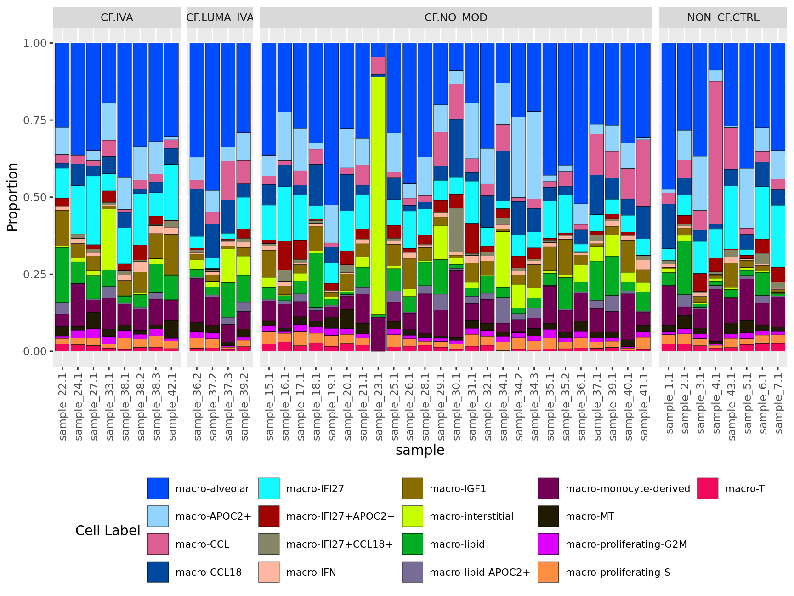
props$Counts %>%
data.frame %>%
inner_join(seu@meta.data %>%
dplyr::select(sample.id,
Disease,
Treatment,
Severity,
Group,
Batch,
Age,
Sex),
by = c("sample" = "sample.id")) %>%
distinct() -> dat
ggplot(dat, aes(x = sample, y = Freq, fill = Disease)) +
geom_bar(stat = "identity") +
theme(axis.text.x = element_text(angle = 90,
vjust = 0.5,
hjust = 1),
legend.text = element_text(size = 8),
legend.position = "bottom") +
labs(y = "No. cells", fill = "Disease") +
facet_grid(~Group, scales = "free_x", space = "free_x") +
geom_hline(yintercept = 1000, linetype = "dashed")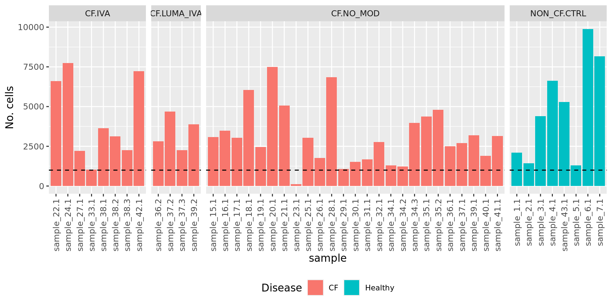
Remove sample with too few cells.
seu <- subset(seu, cells = which(!seu$sample.id %in% c("sample_23.1")))
# Differences in cell type proportions
props <- getTransformedProps(clusters = seu$ann_level_3,
sample = seu$sample.id, transform="asin")
props$Proportions %>% knitr::kable()| sample_1.1 | sample_15.1 | sample_16.1 | sample_17.1 | sample_18.1 | sample_19.1 | sample_2.1 | sample_20.1 | sample_21.1 | sample_22.1 | sample_24.1 | sample_25.1 | sample_26.1 | sample_27.1 | sample_28.1 | sample_29.1 | sample_3.1 | sample_30.1 | sample_31.1 | sample_32.1 | sample_33.1 | sample_34.1 | sample_34.2 | sample_34.3 | sample_35.1 | sample_35.2 | sample_36.1 | sample_36.2 | sample_37.1 | sample_37.2 | sample_37.3 | sample_38.1 | sample_38.2 | sample_38.3 | sample_39.1 | sample_39.2 | sample_4.1 | sample_40.1 | sample_41.1 | sample_42.1 | sample_43.1 | sample_5.1 | sample_6.1 | sample_7.1 | |
|---|---|---|---|---|---|---|---|---|---|---|---|---|---|---|---|---|---|---|---|---|---|---|---|---|---|---|---|---|---|---|---|---|---|---|---|---|---|---|---|---|---|---|---|---|
| macro-alveolar | 0.4750594 | 0.3657272 | 0.2234348 | 0.2772310 | 0.3252813 | 0.5249291 | 0.2832045 | 0.2779856 | 0.3101203 | 0.2744355 | 0.3651142 | 0.2920383 | 0.4566441 | 0.3492996 | 0.3700948 | 0.2007401 | 0.3678344 | 0.0897690 | 0.1948441 | 0.3414193 | 0.1957774 | 0.1299001 | 0.2399031 | 0.2225579 | 0.4291600 | 0.3967425 | 0.5215483 | 0.3704100 | 0.2633531 | 0.4786416 | 0.3373068 | 0.4354883 | 0.3365323 | 0.3201247 | 0.2666667 | 0.2914300 | 0.0884395 | 0.3238696 | 0.3059867 | 0.3034502 | 0.2702652 | 0.4068059 | 0.2751848 | 0.3496872 |
| macro-APOC2+ | 0.0109264 | 0.0651118 | 0.1585296 | 0.1371391 | 0.0198544 | 0.1236319 | 0.0955727 | 0.1273043 | 0.0854212 | 0.0868313 | 0.0002580 | 0.1261976 | 0.0467342 | 0.0329869 | 0.1250182 | 0.0888067 | 0.1756142 | 0.0429043 | 0.1804556 | 0.1162201 | 0.1199616 | 0.1345119 | 0.2617124 | 0.2832326 | 0.0205997 | 0.0200459 | 0.0670391 | 0.0745098 | 0.0318991 | 0.0685604 | 0.0463576 | 0.1048143 | 0.1081254 | 0.1050757 | 0.0848200 | 0.0903459 | 0.0362209 | 0.0835962 | 0.0082357 | 0.0108078 | 0.0045455 | 0.1941222 | 0.0767440 | 0.0922360 |
| macro-CCL | 0.0361045 | 0.0285066 | 0.0134980 | 0.0469160 | 0.0488087 | 0.0137819 | 0.0597330 | 0.0212396 | 0.0658907 | 0.0289438 | 0.0273513 | 0.0181698 | 0.0230856 | 0.0162675 | 0.0207148 | 0.1091582 | 0.0639217 | 0.1141914 | 0.0449640 | 0.0380159 | 0.0527831 | 0.0860876 | 0.0129241 | 0.0312185 | 0.0183108 | 0.0478179 | 0.0179569 | 0.0278075 | 0.1331602 | 0.0388723 | 0.1249448 | 0.0093535 | 0.0287908 | 0.0258237 | 0.0860720 | 0.0753743 | 0.4633263 | 0.0988433 | 0.2169781 | 0.0267424 | 0.1350379 | 0.0201083 | 0.0344234 | 0.0344658 |
| macro-CCL18 | 0.1453682 | 0.0664075 | 0.0709362 | 0.0318241 | 0.1358372 | 0.0506688 | 0.0548138 | 0.1180871 | 0.0307753 | 0.0162146 | 0.0704425 | 0.0716881 | 0.0185811 | 0.0329869 | 0.0229030 | 0.0471785 | 0.0363967 | 0.1881188 | 0.0281775 | 0.1028240 | 0.0556622 | 0.1614143 | 0.1090468 | 0.0757805 | 0.0444038 | 0.0281896 | 0.0458899 | 0.1547237 | 0.1283383 | 0.1114908 | 0.1086093 | 0.0503439 | 0.0153551 | 0.0347284 | 0.0694836 | 0.0433660 | 0.0167522 | 0.0525762 | 0.1042129 | 0.0529306 | 0.0543561 | 0.0487239 | 0.0798826 | 0.0497976 |
| macro-IFI27 | 0.0370546 | 0.1127308 | 0.1748995 | 0.1466535 | 0.0415288 | 0.0664775 | 0.0660576 | 0.1297088 | 0.1110673 | 0.0971359 | 0.1559799 | 0.0835811 | 0.1216216 | 0.2227745 | 0.0850474 | 0.0638298 | 0.1037307 | 0.0554455 | 0.1366906 | 0.0615496 | 0.0556622 | 0.0253651 | 0.0678514 | 0.0518630 | 0.1210803 | 0.1229902 | 0.0243416 | 0.0377897 | 0.0541543 | 0.0337463 | 0.0189845 | 0.1155433 | 0.1666667 | 0.0756901 | 0.0475743 | 0.1040268 | 0.0937217 | 0.0541535 | 0.0538486 | 0.1806845 | 0.2045455 | 0.0193349 | 0.1701934 | 0.2012756 |
| macro-IFI27+APOC2+ | 0.0009501 | 0.0119857 | 0.0953475 | 0.0626640 | 0.0043018 | 0.0218889 | 0.0281096 | 0.0454181 | 0.0327481 | 0.0259130 | 0.0003870 | 0.0419557 | 0.0118243 | 0.0140081 | 0.0288840 | 0.0379278 | 0.0586897 | 0.0455446 | 0.0977218 | 0.0177408 | 0.0374280 | 0.0299769 | 0.0379645 | 0.0362538 | 0.0059510 | 0.0060555 | 0.0027933 | 0.0057041 | 0.0126113 | 0.0044853 | 0.0035320 | 0.0231087 | 0.0489443 | 0.0276046 | 0.0169014 | 0.0294269 | 0.0437670 | 0.0089380 | 0.0003168 | 0.0018013 | 0.0022727 | 0.0108275 | 0.0459654 | 0.0482031 |
| macro-IFI27+CCL18+ | 0.0114014 | 0.0077745 | 0.0376221 | 0.0104987 | 0.0095963 | 0.0020268 | 0.0063247 | 0.0253807 | 0.0023673 | 0.0010608 | 0.0145788 | 0.0095804 | 0.0011261 | 0.0112969 | 0.0029176 | 0.0037003 | 0.0050045 | 0.1425743 | 0.0065947 | 0.0126720 | 0.0076775 | 0.0215219 | 0.0105008 | 0.0060423 | 0.0080110 | 0.0043850 | 0.0019952 | 0.0092692 | 0.0181751 | 0.0057668 | 0.0039735 | 0.0137552 | 0.0047985 | 0.0035619 | 0.0059468 | 0.0121322 | 0.0086025 | 0.0026288 | 0.0142540 | 0.0213385 | 0.0227273 | 0.0015468 | 0.0346259 | 0.0202379 |
| macro-IFN | 0.0114014 | 0.0145773 | 0.0134980 | 0.0065617 | 0.0090999 | 0.0060803 | 0.0063247 | 0.0040075 | 0.0130203 | 0.0122746 | 0.0167720 | 0.0105715 | 0.0191441 | 0.0108450 | 0.0086069 | 0.0129510 | 0.0113740 | 0.0099010 | 0.0239808 | 0.0170167 | 0.0038388 | 0.0146042 | 0.0121163 | 0.0123364 | 0.0144198 | 0.0110670 | 0.0063847 | 0.0049911 | 0.0096439 | 0.0102520 | 0.0154525 | 0.0178817 | 0.0339091 | 0.0258237 | 0.0172144 | 0.0172948 | 0.0033203 | 0.0157729 | 0.0326259 | 0.0230012 | 0.0195076 | 0.0038670 | 0.0054672 | 0.0042929 |
| macro-IGF1 | 0.0047506 | 0.0874636 | 0.0290063 | 0.0272310 | 0.0799140 | 0.0141873 | 0.0238932 | 0.0545017 | 0.0420201 | 0.1160782 | 0.0458005 | 0.0697060 | 0.0996622 | 0.0488025 | 0.0414296 | 0.0277521 | 0.0195632 | 0.0085809 | 0.0629496 | 0.0467053 | 0.0095969 | 0.0084550 | 0.0306947 | 0.0760322 | 0.0771344 | 0.1160994 | 0.0327215 | 0.0185383 | 0.0103858 | 0.0226399 | 0.0088300 | 0.0486933 | 0.0665387 | 0.0814782 | 0.0278560 | 0.0281363 | 0.0090552 | 0.1035752 | 0.0402281 | 0.1292781 | 0.0797348 | 0.0232019 | 0.0173129 | 0.0099350 |
| macro-interstitial | 0.0118765 | 0.0330418 | 0.0031591 | 0.0249344 | 0.0072799 | 0.0077017 | 0.0182713 | 0.0044082 | 0.0339317 | 0.0045461 | 0.0130306 | 0.0082590 | 0.0242117 | 0.0162675 | 0.0051058 | 0.1110083 | 0.0045496 | 0.0217822 | 0.0191847 | 0.0021723 | 0.1986564 | 0.1813989 | 0.0767367 | 0.0324773 | 0.0082399 | 0.0077260 | 0.0554669 | 0.0313725 | 0.0459941 | 0.0175139 | 0.1094923 | 0.0027510 | 0.0063980 | 0.0160285 | 0.0691706 | 0.0627259 | 0.0107154 | 0.0315457 | 0.0310421 | 0.0052653 | 0.0068182 | 0.0092807 | 0.0045560 | 0.0034343 |
| macro-lipid | 0.0418052 | 0.0382248 | 0.0163699 | 0.0423228 | 0.1767042 | 0.0194568 | 0.1742797 | 0.0081485 | 0.0658907 | 0.1786634 | 0.0708296 | 0.0723489 | 0.0506757 | 0.0750113 | 0.0762947 | 0.1119334 | 0.0113740 | 0.0118812 | 0.0263789 | 0.0557567 | 0.0527831 | 0.0322829 | 0.0185784 | 0.0317221 | 0.0391394 | 0.1016914 | 0.0311253 | 0.0245989 | 0.1275964 | 0.0258437 | 0.1125828 | 0.0211829 | 0.0409469 | 0.0943900 | 0.1276995 | 0.0862158 | 0.0123755 | 0.0289169 | 0.0627178 | 0.0780103 | 0.0257576 | 0.0177881 | 0.0750228 | 0.0073593 |
| macro-lipid-APOC2+ | 0.0004751 | 0.0058309 | 0.0097645 | 0.0252625 | 0.0105890 | 0.0052696 | 0.0393535 | 0.0050761 | 0.0213060 | 0.0371268 | 0.0001290 | 0.0363396 | 0.0033784 | 0.0031631 | 0.0268417 | 0.0518039 | 0.0054595 | 0.0079208 | 0.0221823 | 0.0202752 | 0.0374280 | 0.0837817 | 0.0193861 | 0.0324773 | 0.0020600 | 0.0045939 | 0.0043895 | 0.0046346 | 0.0252226 | 0.0057668 | 0.0229581 | 0.0038514 | 0.0057582 | 0.0213713 | 0.0519562 | 0.0309757 | 0.0123755 | 0.0094637 | 0.0031676 | 0.0013856 | 0.0003788 | 0.0100541 | 0.0231852 | 0.0023304 |
| macro-monocyte-derived | 0.1292162 | 0.0631681 | 0.0789776 | 0.0492126 | 0.0342488 | 0.0328334 | 0.0288124 | 0.0435480 | 0.0952851 | 0.0403091 | 0.1385628 | 0.0630988 | 0.0534910 | 0.0402169 | 0.1296864 | 0.0832562 | 0.0618744 | 0.2158416 | 0.0557554 | 0.0774801 | 0.1007678 | 0.0284397 | 0.0387722 | 0.0347432 | 0.1215381 | 0.0703696 | 0.0913807 | 0.1433155 | 0.0778932 | 0.0931226 | 0.0569536 | 0.0679505 | 0.0697377 | 0.0828139 | 0.0666667 | 0.0562726 | 0.1696348 | 0.1493165 | 0.0424454 | 0.0644312 | 0.0825758 | 0.1337974 | 0.0725929 | 0.0983687 |
| macro-MT | 0.0190024 | 0.0168448 | 0.0103389 | 0.0252625 | 0.0190271 | 0.0372923 | 0.0421644 | 0.0617152 | 0.0341290 | 0.0315199 | 0.0130306 | 0.0247770 | 0.0185811 | 0.0533213 | 0.0138585 | 0.0083256 | 0.0191083 | 0.0105611 | 0.0263789 | 0.0231716 | 0.0239923 | 0.0138355 | 0.0040388 | 0.0239174 | 0.0189975 | 0.0187931 | 0.0319234 | 0.0281640 | 0.0181751 | 0.0237078 | 0.0123620 | 0.0181568 | 0.0127959 | 0.0133571 | 0.0178404 | 0.0260712 | 0.0075460 | 0.0215563 | 0.0202724 | 0.0597201 | 0.0361742 | 0.0409899 | 0.0188316 | 0.0134920 |
| macro-proliferating-G2M | 0.0109264 | 0.0181406 | 0.0068926 | 0.0219816 | 0.0198544 | 0.0226996 | 0.0168658 | 0.0189687 | 0.0126258 | 0.0081831 | 0.0247710 | 0.0181698 | 0.0112613 | 0.0293719 | 0.0103574 | 0.0101758 | 0.0150136 | 0.0112211 | 0.0191847 | 0.0184649 | 0.0239923 | 0.0184473 | 0.0153473 | 0.0156093 | 0.0274662 | 0.0127375 | 0.0207502 | 0.0210339 | 0.0129822 | 0.0196497 | 0.0048565 | 0.0242091 | 0.0153551 | 0.0227070 | 0.0115806 | 0.0105834 | 0.0049804 | 0.0057834 | 0.0177384 | 0.0076209 | 0.0140152 | 0.0193349 | 0.0139719 | 0.0116522 |
| macro-proliferating-S | 0.0304038 | 0.0398445 | 0.0272832 | 0.0465879 | 0.0309398 | 0.0356709 | 0.0323261 | 0.0292546 | 0.0232788 | 0.0174269 | 0.0220617 | 0.0393129 | 0.0236486 | 0.0253050 | 0.0128373 | 0.0185014 | 0.0227480 | 0.0165017 | 0.0383693 | 0.0293266 | 0.0143954 | 0.0284397 | 0.0371567 | 0.0284491 | 0.0357061 | 0.0223429 | 0.0331205 | 0.0338681 | 0.0211424 | 0.0288338 | 0.0057395 | 0.0360385 | 0.0271913 | 0.0365093 | 0.0203443 | 0.0209086 | 0.0090552 | 0.0063091 | 0.0389610 | 0.0250797 | 0.0295455 | 0.0185615 | 0.0263238 | 0.0268613 |
| macro-T | 0.0232779 | 0.0246194 | 0.0304423 | 0.0177165 | 0.0271343 | 0.0154033 | 0.0238932 | 0.0252471 | 0.0201223 | 0.0233369 | 0.0209005 | 0.0142055 | 0.0163288 | 0.0180750 | 0.0194019 | 0.0129510 | 0.0177434 | 0.0072607 | 0.0161871 | 0.0191890 | 0.0095969 | 0.0015373 | 0.0072698 | 0.0052870 | 0.0077821 | 0.0083525 | 0.0111732 | 0.0092692 | 0.0092730 | 0.0111064 | 0.0070640 | 0.0068776 | 0.0121561 | 0.0129118 | 0.0122066 | 0.0147135 | 0.0101117 | 0.0031546 | 0.0069686 | 0.0084523 | 0.0117424 | 0.0216551 | 0.0257163 | 0.0263707 |
props$Proportions %>%
data.frame %>%
inner_join(seu@meta.data %>%
dplyr::select(sample.id,
Disease,
Treatment,
Severity,
Group,
Batch,
Age,
Sex),
by = c("sample" = "sample.id")) %>%
distinct()-> dat
ggplot(dat, aes(x = sample, y = Freq, fill = clusters)) +
geom_bar(stat = "identity", color = "black", size = 0.1) +
theme(axis.text.x = element_text(angle = 90,
vjust = 0.5,
hjust = 1),
legend.text = element_text(size = 8),
legend.position = "bottom") +
labs(y = "Proportion", fill = "Cell Label") +
scale_fill_paletteer_d("Polychrome::glasbey", direction = -1) +
facet_grid(~Group, scales = "free_x", space = "free_x")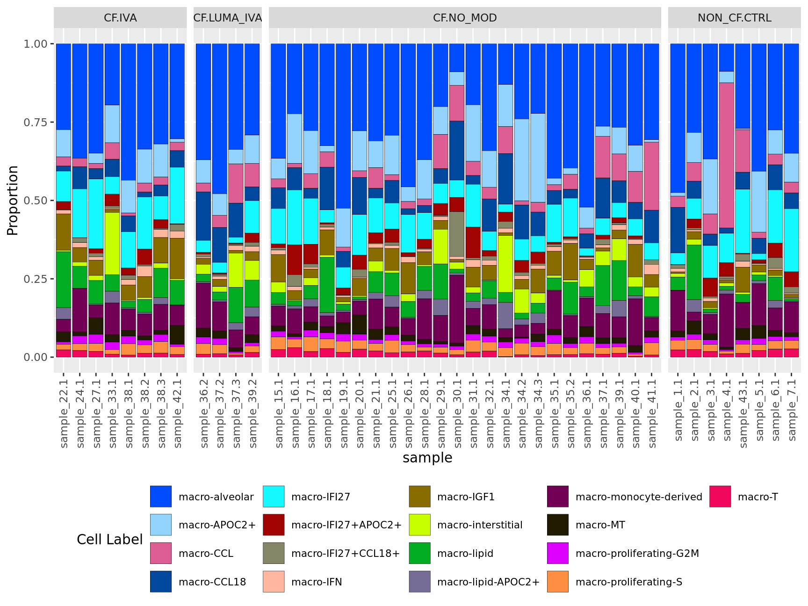
props$Proportions %>%
data.frame %>%
inner_join(seu@meta.data %>%
dplyr::select(sample.id,
ann_level_3,
Disease,
Treatment,
Severity,
Batch,
Age,
Sex),
by = c("sample" = "sample.id", "clusters" = "ann_level_3")) %>%
distinct()-> dat
ggplot(dat,
aes(x = clusters, y = Freq, fill = clusters)) +
geom_boxplot(outlier.size = 0.1, size = 0.25) +
theme(axis.text.x = element_text(angle = 45,
vjust = 1,
hjust = 1),
legend.text = element_text(size = 8)) +
labs(y = "Proportion") +
scale_fill_paletteer_d("Polychrome::glasbey", direction = -1) +
NoLegend()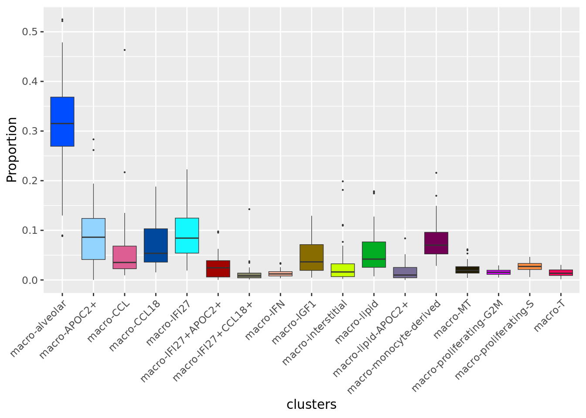
Look at the sources of variation in the raw cell count level data.
dims <- list(c(1,2), c(2:3), c(3,4), c(4,5))
p <- vector("list", length(dims))
for(i in 1:length(dims)){
mds <- plotMDS(props$Counts,
gene.selection = "common",
plot = FALSE, dim.plot = dims[[i]])
data.frame(x = mds$x,
y = mds$y,
sample = rownames(mds$distance.matrix.squared)) %>%
left_join(seu@meta.data %>%
dplyr::select(sample.id,
Disease,
Treatment,
Severity,
Batch,
Age,
Sex),
by = c("sample" = "sample.id")) %>%
distinct() -> dat
p[[i]] <- ggplot(dat, aes(x = x, y = y,
shape = as.factor(Disease),
color = as.factor(Batch))) +
geom_point(size = 3) +
labs(x = glue("Principal Component {dims[[i]][1]}"),
y = glue("Principal Component {dims[[i]][2]}"),
colour = "Batch",
shape = "Disease") +
theme(legend.direction = "horizontal",
legend.text = element_text(size = 8),
legend.title = element_text(size = 9),
axis.text = element_text(size = 8),
axis.title = element_text(size = 9))
}
wrap_plots(p, cols = 2) + plot_layout(guides = "collect") &
theme(legend.position = "bottom") 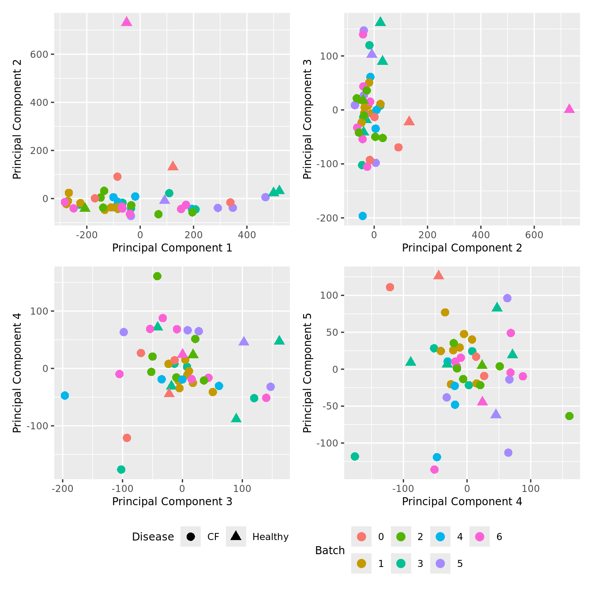
dims <- list(c(1,2), c(2:3), c(3,4), c(4,5))
p <- vector("list", length(dims))
for(i in 1:length(dims)){
mds <- plotMDS(props$Counts,
gene.selection = "common",
plot = FALSE, dim.plot = dims[[i]])
data.frame(x = mds$x,
y = mds$y,
sample = rownames(mds$distance.matrix.squared)) %>%
left_join(seu@meta.data %>%
dplyr::select(sample.id,
Disease,
Treatment,
Severity,
Participant,
Batch,
Age,
Sex),
by = c("sample" = "sample.id")) %>%
group_by(sample) %>%
mutate(ncells = n()) %>%
ungroup() %>%
distinct() -> dat
p[[i]] <- ggplot(dat, aes(x = x, y = y,
colour = log2(ncells)))+
geom_text(aes(label = str_remove_all(sample, "sample_")), size = 2.5) +
labs(x = glue("Principal Component {dims[[i]][1]}"),
y = glue("Principal Component {dims[[i]][2]}"),
colour = "Log2 No. Cells") +
theme(legend.direction = "horizontal",
legend.text = element_text(size = 8),
legend.title = element_text(size = 9),
axis.text = element_text(size = 8),
axis.title = element_text(size = 9)) +
scale_colour_viridis_c(option = "magma")
}
wrap_plots(p, cols = 2) + plot_layout(guides = "collect") &
theme(legend.position = "bottom") 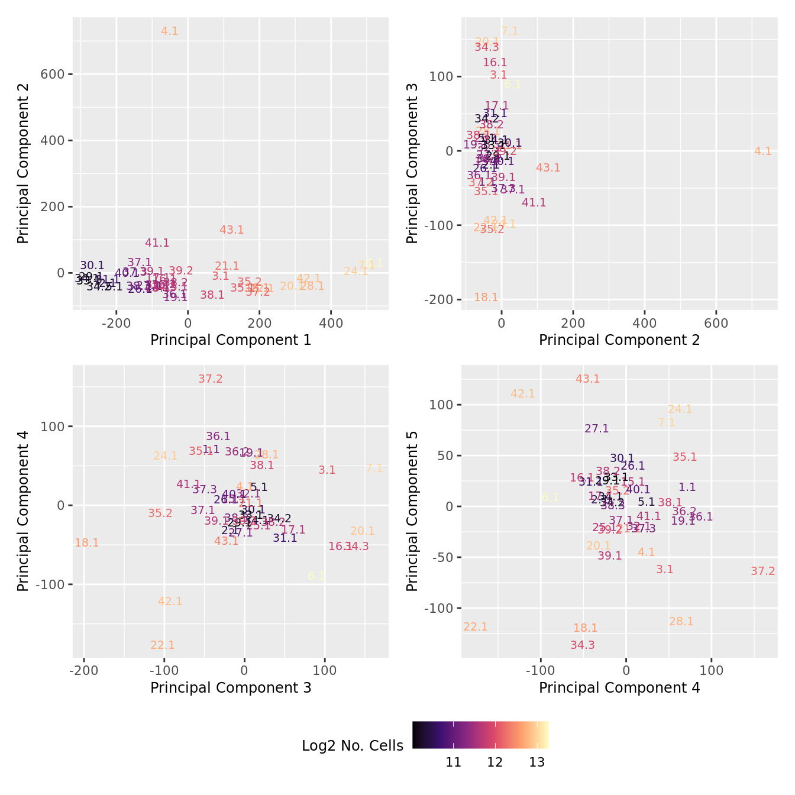
Look at the sources of variation in the cell proportions data.
dims <- list(c(1,2), c(2:3), c(3,4), c(4,5))
p <- vector("list", length(dims))
for(i in 1:length(dims)){
mds <- plotMDS(props$TransformedProps,
gene.selection = "common",
plot = FALSE, dim.plot = dims[[i]])
data.frame(x = mds$x,
y = mds$y,
sample = rownames(mds$distance.matrix.squared)) %>%
left_join(seu@meta.data %>%
dplyr::select(sample.id,
Disease,
Treatment,
Severity,
Batch,
Age,
Sex),
by = c("sample" = "sample.id")) %>%
distinct() -> dat
p[[i]] <- ggplot(dat, aes(x = x, y = y,
shape = as.factor(Disease),
color = as.factor(Batch)))+
geom_point(size = 3) +
labs(x = glue("Principal Component {dims[[i]][1]}"),
y = glue("Principal Component {dims[[i]][2]}"),
colour = "Batch",
shape = "Disease") +
theme(legend.direction = "horizontal",
legend.text = element_text(size = 8),
legend.title = element_text(size = 9),
axis.text = element_text(size = 8),
axis.title = element_text(size = 9))
}
wrap_plots(p, cols = 2) + plot_layout(guides = "collect") &
theme(legend.position = "bottom") 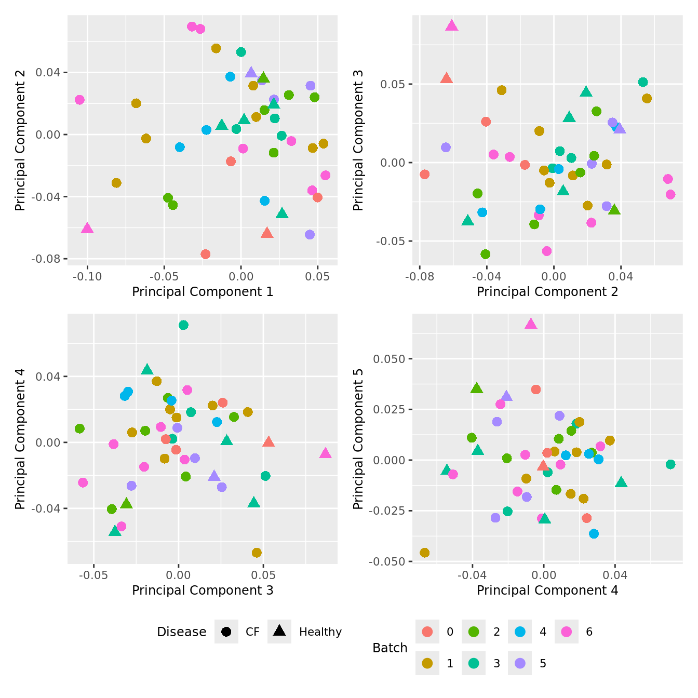
dims <- list(c(1,2), c(2:3), c(3,4), c(4,5))
p <- vector("list", length(dims))
for(i in 1:length(dims)){
mds <- plotMDS(props$TransformedProps,
gene.selection = "common",
plot = FALSE, dim.plot = dims[[i]])
data.frame(x = mds$x,
y = mds$y,
sample = rownames(mds$distance.matrix.squared)) %>%
left_join(seu@meta.data %>%
dplyr::select(sample.id,
Disease,
Treatment,
Severity,
Batch,
Age,
Sex),
by = c("sample" = "sample.id")) %>%
distinct() -> dat
p[[i]] <- ggplot(dat, aes(x = x, y = y,
shape = as.factor(Disease),
color = Sex))+
geom_point(size = 3) +
labs(x = glue("Principal Component {dims[[i]][1]}"),
y = glue("Principal Component {dims[[i]][2]}"),
colour = "Sex",
shape = "Disease") +
theme(legend.direction = "horizontal",
legend.text = element_text(size = 8),
legend.title = element_text(size = 9),
axis.text = element_text(size = 8),
axis.title = element_text(size = 9))
}
wrap_plots(p, cols = 2) + plot_layout(guides = "collect") &
theme(legend.position = "bottom") 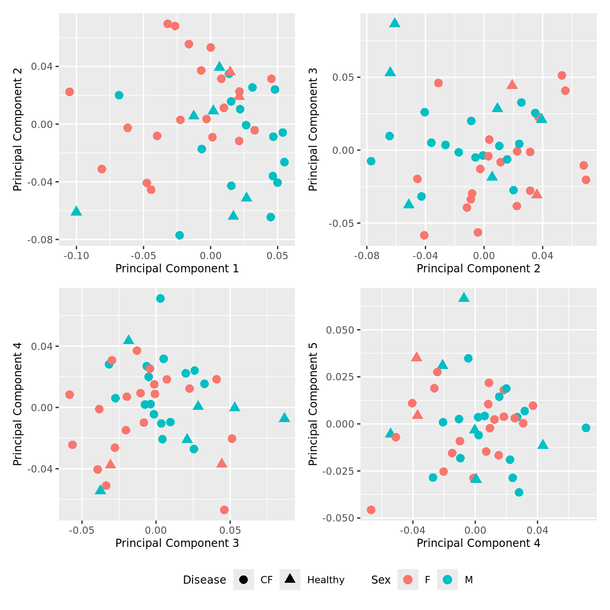
dims <- list(c(1,2), c(2:3), c(3,4), c(4,5))
p <- vector("list", length(dims))
for(i in 1:length(dims)){
mds <- plotMDS(props$TransformedProps,
gene.selection = "common",
plot = FALSE, dim.plot = dims[[i]])
data.frame(x = mds$x,
y = mds$y,
sample = rownames(mds$distance.matrix.squared)) %>%
left_join(seu@meta.data %>%
dplyr::select(sample.id,
Disease,
Treatment,
Severity,
Participant,
Batch,
Age,
Sex),
by = c("sample" = "sample.id")) %>%
group_by(sample) %>%
mutate(ncells = n()) %>%
ungroup() %>%
distinct() -> dat
p[[i]] <- ggplot(dat, aes(x = x, y = y,
colour = log2(Age)))+
geom_text(aes(label = str_remove_all(sample, "sample_")), size = 2.5) +
labs(x = glue("Principal Component {dims[[i]][1]}"),
y = glue("Principal Component {dims[[i]][2]}"),
colour = "Log2 Age") +
theme(legend.direction = "horizontal",
legend.text = element_text(size = 8),
legend.title = element_text(size = 9),
axis.text = element_text(size = 8),
axis.title = element_text(size = 9)) +
scale_colour_viridis_c(option = "magma")
}
wrap_plots(p, cols = 2) + plot_layout(guides = "collect") &
theme(legend.position = "bottom") 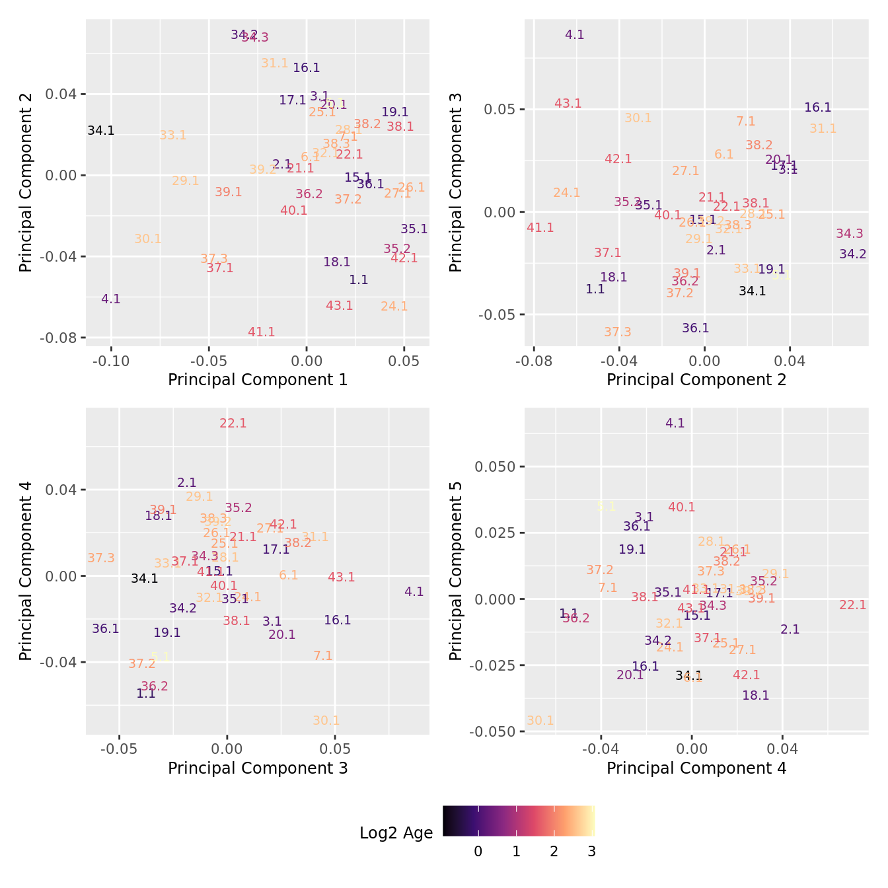
dims <- list(c(1,2), c(2:3), c(3,4), c(4,5))
p <- vector("list", length(dims))
for(i in 1:length(dims)){
mds <- plotMDS(props$TransformedProps,
gene.selection = "common",
plot = FALSE, dim.plot = dims[[i]])
data.frame(x = mds$x,
y = mds$y,
sample = rownames(mds$distance.matrix.squared)) %>%
left_join(seu@meta.data %>%
dplyr::select(sample.id,
Disease,
Treatment,
Severity,
Participant,
Batch,
Age,
Sex),
by = c("sample" = "sample.id")) %>%
group_by(sample) %>%
mutate(ncells = n()) %>%
ungroup() %>%
distinct() -> dat
p[[i]] <- ggplot(dat, aes(x = x, y = y,
colour = log2(ncells)))+
geom_text(aes(label = str_remove_all(sample, "sample_")), size = 2.5) +
labs(x = glue("Principal Component {dims[[i]][1]}"),
y = glue("Principal Component {dims[[i]][2]}"),
colour = "Log2 No. Cells") +
theme(legend.direction = "horizontal",
legend.text = element_text(size = 8),
legend.title = element_text(size = 9),
axis.text = element_text(size = 8),
axis.title = element_text(size = 9)) +
scale_colour_viridis_c(option = "magma")
}
wrap_plots(p, cols = 2) + plot_layout(guides = "collect") &
theme(legend.position = "bottom") 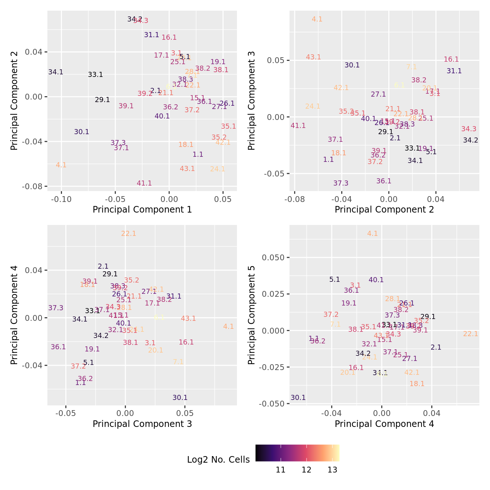
Principal components analysis (PCA) allows us to mathematically determine the sources of variation in the data. We can then investigate whether these correlate with any of the specifed covariates. First, we calculate the principal components. The scree plot belows shows us that most of the variation in this data is captured by the top 7 principal components.
PCs <- prcomp(t(props$TransformedProps), center = TRUE,
scale = TRUE, retx = TRUE)
loadings = PCs$x # pc loadings
plot(PCs, type="lines") # scree plot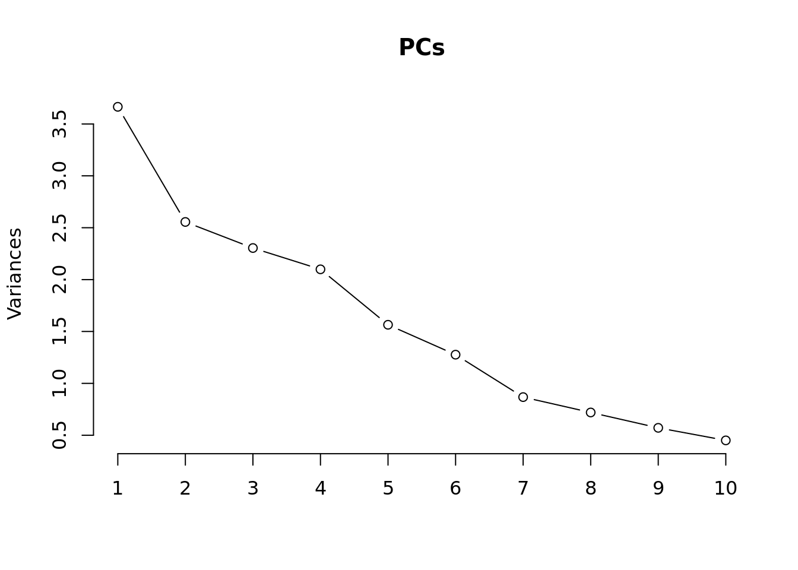
Collect all of the known sample traits.
nGenes = nrow(props$TransformedProps)
nSamples = ncol(props$TransformedProps)
info <- seu@meta.data %>%
dplyr::select(sample.id,
Disease,
Treatment,
Severity,
Participant,
Group_severity,
Group,
Batch,
Age,
Sex) %>%
group_by(sample.id) %>%
mutate(ncells = n()) %>%
ungroup() %>%
distinct()
m <- match(colnames(props$TransformedProps), info$sample.id)
info <- info[m,]
datTraits <- info %>% dplyr::select(Participant, Batch, Disease, Treatment,
Severity, Age, Sex, ncells, Group) %>%
mutate(Age = log2(Age),
ncells = log2(ncells),
Donor = factor(Participant),
Batch = factor(Batch),
Disease = factor(Disease,
labels = 1:length(unique(Disease))),
Group = factor(Group,
labels = 1:length(unique(Group))),
Treatment = factor(Treatment,
labels = 1:length(unique(Treatment))),
Sex = factor(Sex, labels = length(unique(Sex))),
Severity = factor(Severity, labels = length(unique(Severity)))) %>%
mutate(across(everything(), as.numeric)) %>%
dplyr::select(-Participant)
datTraits %>%
knitr::kable()| Batch | Disease | Treatment | Severity | Age | Sex | ncells | Group | Donor |
|---|---|---|---|---|---|---|---|---|
| 4 | 2 | 1 | 1 | -0.2590872 | 2 | 11.03960 | 4 | 1 |
| 4 | 1 | 4 | 2 | -0.0939001 | 2 | 11.59199 | 3 | 2 |
| 4 | 1 | 4 | 2 | -0.1151479 | 1 | 11.76570 | 3 | 3 |
| 5 | 1 | 4 | 2 | -0.0441471 | 1 | 11.57365 | 3 | 4 |
| 5 | 1 | 4 | 2 | 0.1428834 | 2 | 12.56129 | 3 | 5 |
| 6 | 1 | 4 | 2 | -0.0729608 | 1 | 11.26854 | 3 | 6 |
| 4 | 2 | 1 | 1 | 0.1464588 | 2 | 10.47472 | 4 | 7 |
| 6 | 1 | 4 | 3 | 0.5597097 | 2 | 12.86998 | 3 | 8 |
| 4 | 1 | 4 | 3 | 1.5743836 | 1 | 12.30749 | 3 | 9 |
| 4 | 1 | 2 | 2 | 1.5993830 | 2 | 12.68803 | 1 | 10 |
| 6 | 1 | 2 | 2 | 2.3883594 | 2 | 12.92017 | 1 | 11 |
| 2 | 1 | 4 | 3 | 2.2957230 | 1 | 11.56367 | 3 | 12 |
| 2 | 1 | 4 | 2 | 2.3360877 | 2 | 10.79442 | 3 | 13 |
| 2 | 1 | 2 | 2 | 2.2980155 | 2 | 11.11179 | 1 | 14 |
| 6 | 1 | 4 | 2 | 2.5790214 | 1 | 12.74294 | 3 | 15 |
| 2 | 1 | 4 | 3 | 2.5823250 | 1 | 10.07815 | 3 | 16 |
| 6 | 2 | 1 | 1 | 0.1321035 | 2 | 12.10198 | 4 | 17 |
| 2 | 1 | 4 | 3 | 2.5889097 | 1 | 10.56510 | 3 | 18 |
| 2 | 1 | 4 | 2 | 2.5583683 | 1 | 10.70390 | 3 | 19 |
| 2 | 1 | 4 | 2 | 2.5670653 | 1 | 11.43150 | 3 | 20 |
| 2 | 1 | 2 | 3 | 2.5730557 | 2 | 10.02514 | 1 | 21 |
| 7 | 1 | 4 | 2 | -0.9343238 | 1 | 10.34541 | 3 | 22 |
| 7 | 1 | 4 | 2 | 0.0918737 | 1 | 10.27380 | 3 | 22 |
| 7 | 1 | 4 | 2 | 1.0409164 | 1 | 11.95565 | 3 | 22 |
| 7 | 1 | 4 | 2 | 0.0807044 | 2 | 12.09309 | 3 | 23 |
| 7 | 1 | 4 | 2 | 0.9940589 | 2 | 12.22551 | 3 | 23 |
| 7 | 1 | 4 | 3 | -0.0564254 | 1 | 11.29117 | 3 | 24 |
| 7 | 1 | 3 | 3 | 1.1764977 | 1 | 11.45379 | 2 | 24 |
| 3 | 1 | 4 | 2 | 1.5597097 | 1 | 11.39660 | 3 | 25 |
| 3 | 1 | 3 | 2 | 2.1930156 | 1 | 12.19291 | 2 | 25 |
| 3 | 1 | 3 | 2 | 2.2980155 | 1 | 11.14530 | 2 | 25 |
| 3 | 1 | 2 | 2 | 1.5703964 | 2 | 11.82774 | 1 | 26 |
| 3 | 1 | 2 | 2 | 2.0206033 | 2 | 11.61010 | 1 | 26 |
| 3 | 1 | 2 | 2 | 2.3485584 | 2 | 11.13314 | 1 | 26 |
| 5 | 1 | 4 | 2 | 1.9730702 | 1 | 11.64160 | 3 | 27 |
| 5 | 1 | 3 | 2 | 2.6297159 | 1 | 11.91961 | 2 | 27 |
| 7 | 2 | 1 | 1 | 0.2923784 | 2 | 12.69392 | 4 | 28 |
| 1 | 1 | 4 | 3 | 1.5801455 | 2 | 10.89330 | 3 | 29 |
| 1 | 1 | 4 | 2 | 1.5801455 | 2 | 11.62434 | 3 | 30 |
| 1 | 1 | 2 | 3 | 1.5993178 | 2 | 12.81718 | 1 | 31 |
| 1 | 2 | 1 | 1 | 1.5849625 | 2 | 12.36632 | 4 | 32 |
| 3 | 2 | 1 | 1 | 3.0699187 | 1 | 10.33651 | 4 | 33 |
| 4 | 2 | 1 | 1 | 2.4204621 | 2 | 13.26986 | 4 | 34 |
| 4 | 2 | 1 | 1 | 2.2356012 | 1 | 12.99312 | 4 | 35 |
Correlate known sample traits with the top 10 principal components. This can help us determine which traits are potentially contributing to the main sources of variation in the data and should thus be included in our statistical analysis.
moduleTraitCor <- suppressWarnings(cor(loadings[, 1:10], datTraits, use = "p"))
moduleTraitPvalue <- WGCNA::corPvalueStudent(moduleTraitCor, (nSamples - 2))
textMatrix <- paste(signif(moduleTraitCor, 2), "\n(",
signif(moduleTraitPvalue, 1), ")", sep = "")
dim(textMatrix) <- dim(moduleTraitCor)
## Display the correlation values within a heatmap plot
par(cex=0.75, mar = c(6, 8.5, 3, 3))
WGCNA::labeledHeatmap(Matrix = t(moduleTraitCor),
xLabels = colnames(loadings)[1:10],
yLabels = names(datTraits),
colorLabels = FALSE,
colors = WGCNA::blueWhiteRed(6),
textMatrix = t(textMatrix),
setStdMargins = FALSE,
cex.text = 1,
zlim = c(-1,1),
main = paste("PCA-trait relationships: Top 10 PCs"))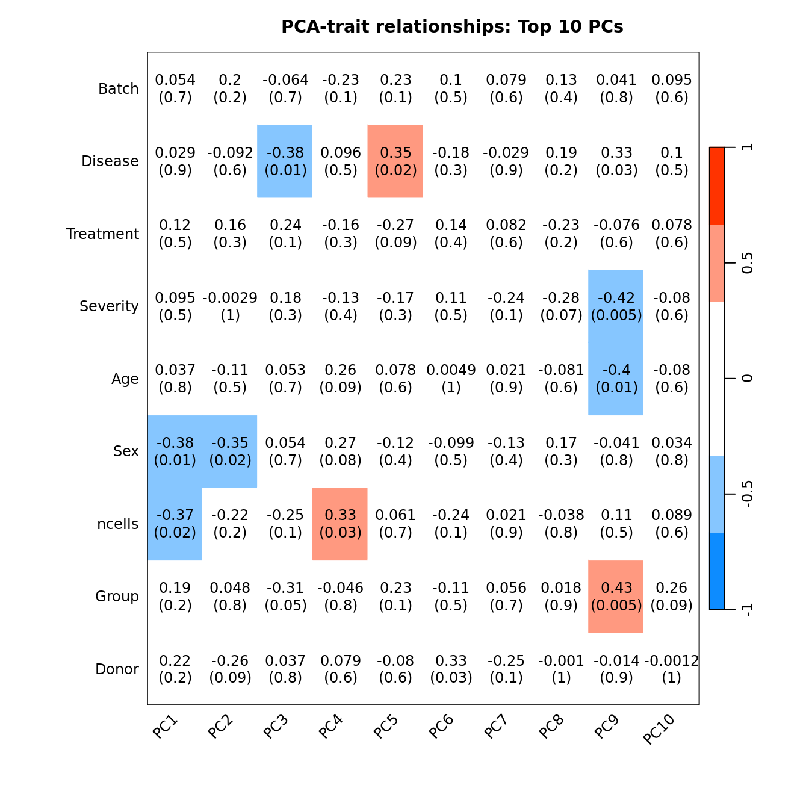
propeller and
limma approachCreate the design matrix.
group <- factor(info$Group_severity)
participant <- factor(info$Participant)
age <- log2(info$Age)
batch <- factor(info$Batch)
sex <- factor(info$Sex)
design <- model.matrix(~ 0 + group + batch + age + sex)
colnames(design)[1:7] <- levels(group)
design CF.IVA.M CF.IVA.S CF.LUMA_IVA.M CF.LUMA_IVA.S CF.NO_MOD.M CF.NO_MOD.S
1 0 0 0 0 0 0
2 0 0 0 0 1 0
3 0 0 0 0 1 0
4 0 0 0 0 1 0
5 0 0 0 0 1 0
6 0 0 0 0 1 0
7 0 0 0 0 0 0
8 0 0 0 0 0 1
9 0 0 0 0 0 1
10 1 0 0 0 0 0
11 1 0 0 0 0 0
12 0 0 0 0 0 1
13 0 0 0 0 1 0
14 1 0 0 0 0 0
15 0 0 0 0 1 0
16 0 0 0 0 0 1
17 0 0 0 0 0 0
18 0 0 0 0 0 1
19 0 0 0 0 1 0
20 0 0 0 0 1 0
21 0 1 0 0 0 0
22 0 0 0 0 1 0
23 0 0 0 0 1 0
24 0 0 0 0 1 0
25 0 0 0 0 1 0
26 0 0 0 0 1 0
27 0 0 0 0 0 1
28 0 0 0 1 0 0
29 0 0 0 0 1 0
30 0 0 1 0 0 0
31 0 0 1 0 0 0
32 1 0 0 0 0 0
33 1 0 0 0 0 0
34 1 0 0 0 0 0
35 0 0 0 0 1 0
36 0 0 1 0 0 0
37 0 0 0 0 0 0
38 0 0 0 0 0 1
39 0 0 0 0 1 0
40 0 1 0 0 0 0
41 0 0 0 0 0 0
42 0 0 0 0 0 0
43 0 0 0 0 0 0
44 0 0 0 0 0 0
NON_CF.CTRL batch1 batch2 batch3 batch4 batch5 batch6 age sexM
1 1 0 0 1 0 0 0 -0.25908722 1
2 0 0 0 1 0 0 0 -0.09390014 1
3 0 0 0 1 0 0 0 -0.11514787 0
4 0 0 0 0 1 0 0 -0.04414710 0
5 0 0 0 0 1 0 0 0.14288337 1
6 0 0 0 0 0 1 0 -0.07296080 0
7 1 0 0 1 0 0 0 0.14645883 1
8 0 0 0 0 0 1 0 0.55970971 1
9 0 0 0 1 0 0 0 1.57438357 0
10 0 0 0 1 0 0 0 1.59938302 1
11 0 0 0 0 0 1 0 2.38835941 1
12 0 1 0 0 0 0 0 2.29572302 0
13 0 1 0 0 0 0 0 2.33608770 1
14 0 1 0 0 0 0 0 2.29801547 1
15 0 0 0 0 0 1 0 2.57902140 0
16 0 1 0 0 0 0 0 2.58232503 0
17 1 0 0 0 0 1 0 0.13210354 1
18 0 1 0 0 0 0 0 2.58890969 0
19 0 1 0 0 0 0 0 2.55836829 0
20 0 1 0 0 0 0 0 2.56706530 0
21 0 1 0 0 0 0 0 2.57305573 1
22 0 0 0 0 0 0 1 -0.93432383 0
23 0 0 0 0 0 0 1 0.09187369 0
24 0 0 0 0 0 0 1 1.04091644 0
25 0 0 0 0 0 0 1 0.08070438 1
26 0 0 0 0 0 0 1 0.99405890 1
27 0 0 0 0 0 0 1 -0.05642543 0
28 0 0 0 0 0 0 1 1.17649766 0
29 0 0 1 0 0 0 0 1.55970971 0
30 0 0 1 0 0 0 0 2.19301559 0
31 0 0 1 0 0 0 0 2.29801547 0
32 0 0 1 0 0 0 0 1.57039639 1
33 0 0 1 0 0 0 0 2.02060327 1
34 0 0 1 0 0 0 0 2.34855840 1
35 0 0 0 0 1 0 0 1.97307024 0
36 0 0 0 0 1 0 0 2.62971590 0
37 1 0 0 0 0 0 1 0.29237837 1
38 0 0 0 0 0 0 0 1.58014548 1
39 0 0 0 0 0 0 0 1.58014548 1
40 0 0 0 0 0 0 0 1.59931779 1
41 1 0 0 0 0 0 0 1.58496250 1
42 1 0 1 0 0 0 0 3.06991870 0
43 1 0 0 1 0 0 0 2.42046210 1
44 1 0 0 1 0 0 0 2.23560118 0
attr(,"assign")
[1] 1 1 1 1 1 1 1 2 2 2 2 2 2 3 4
attr(,"contrasts")
attr(,"contrasts")$group
[1] "contr.treatment"
attr(,"contrasts")$batch
[1] "contr.treatment"
attr(,"contrasts")$sex
[1] "contr.treatment"Create the contrast matrix.
contr <- makeContrasts(CF.NO_MODvCF.IVA = 0.5*(CF.NO_MOD.M + CF.NO_MOD.S) - 0.5*(CF.IVA.M + CF.IVA.S),
CF.NO_MODvCF.LUMA_IVA = 0.5*(CF.NO_MOD.M + CF.NO_MOD.S) - 0.5*(CF.LUMA_IVA.M + CF.LUMA_IVA.S),
CF.NO_MOD.MvCF.NO_MOD.S = CF.NO_MOD.M - CF.NO_MOD.S,
CF.NO_MODvNON_CF.CTRL = 0.5*(CF.NO_MOD.M + CF.NO_MOD.S) - NON_CF.CTRL,
CF.IVAvNON_CF.CTRL = 0.5*(CF.IVA.M + CF.IVA.S) - NON_CF.CTRL,
CF.LUMA_IVAvNON_CF.CTRL = 0.5*(CF.LUMA_IVA.M + CF.LUMA_IVA.S) - NON_CF.CTRL,
levels = design)
contr Contrasts
Levels CF.NO_MODvCF.IVA CF.NO_MODvCF.LUMA_IVA CF.NO_MOD.MvCF.NO_MOD.S
CF.IVA.M -0.5 0.0 0
CF.IVA.S -0.5 0.0 0
CF.LUMA_IVA.M 0.0 -0.5 0
CF.LUMA_IVA.S 0.0 -0.5 0
CF.NO_MOD.M 0.5 0.5 1
CF.NO_MOD.S 0.5 0.5 -1
NON_CF.CTRL 0.0 0.0 0
batch1 0.0 0.0 0
batch2 0.0 0.0 0
batch3 0.0 0.0 0
batch4 0.0 0.0 0
batch5 0.0 0.0 0
batch6 0.0 0.0 0
age 0.0 0.0 0
sexM 0.0 0.0 0
Contrasts
Levels CF.NO_MODvNON_CF.CTRL CF.IVAvNON_CF.CTRL
CF.IVA.M 0.0 0.5
CF.IVA.S 0.0 0.5
CF.LUMA_IVA.M 0.0 0.0
CF.LUMA_IVA.S 0.0 0.0
CF.NO_MOD.M 0.5 0.0
CF.NO_MOD.S 0.5 0.0
NON_CF.CTRL -1.0 -1.0
batch1 0.0 0.0
batch2 0.0 0.0
batch3 0.0 0.0
batch4 0.0 0.0
batch5 0.0 0.0
batch6 0.0 0.0
age 0.0 0.0
sexM 0.0 0.0
Contrasts
Levels CF.LUMA_IVAvNON_CF.CTRL
CF.IVA.M 0.0
CF.IVA.S 0.0
CF.LUMA_IVA.M 0.5
CF.LUMA_IVA.S 0.5
CF.NO_MOD.M 0.0
CF.NO_MOD.S 0.0
NON_CF.CTRL -1.0
batch1 0.0
batch2 0.0
batch3 0.0
batch4 0.0
batch5 0.0
batch6 0.0
age 0.0
sexM 0.0Add random effect for samples from the same individual.
dupcor <- duplicateCorrelation(props$TransformedProps, design=design,
block=participant)
dupcor$consensus.correlation
[1] 0.6239257
$cor
[1] 0.6239257
$atanh.correlations
[1] 0.80080074 1.27682941 0.70836292 1.46926384 0.63499798 1.30012069
[7] 1.42121492 0.64466135 1.01553796 0.29787332 0.45725389 0.35069044
[13] 1.03135931 0.60024395 -0.53606034 0.04722491 0.38956524Fit the model.
fit <- lmFit(props$TransformedProps, design=design, block=participant,
correlation=dupcor$consensus)
fit2 <- contrasts.fit(fit, contr)
fit2 <- eBayes(fit2, robust=TRUE, trend=FALSE)
pvalue <- 0.05
summary(decideTests(fit2, p.value = pvalue)) CF.NO_MODvCF.IVA CF.NO_MODvCF.LUMA_IVA CF.NO_MOD.MvCF.NO_MOD.S
Down 0 0 0
NotSig 17 17 17
Up 0 0 0
CF.NO_MODvNON_CF.CTRL CF.IVAvNON_CF.CTRL CF.LUMA_IVAvNON_CF.CTRL
Down 0 0 0
NotSig 16 17 17
Up 1 0 0p <- vector("list", ncol(contr))
for(i in 1:ncol(contr)){
print(knitr::kable(topTable(fit2, coef = i),
caption = colnames(contr)[i]))
props$Proportions %>% data.frame %>%
left_join(info,
by = c("sample" = "sample.id")) %>%
mutate(Group = Group_severity) %>%
dplyr::filter(Group %in% names(contr[,i])[abs(contr[, i]) > 0]) -> dat
if(length(unique(dat$Group)) > 2) dat$Group <- str_remove(dat$Group, ".(M|S)$")
ggplot(dat, aes(x = Group,
y = Freq,
colour = Group,
group = Group)) +
geom_boxplot(outlier.shape = NA, colour = "grey") +
geom_jitter(stat = "identity",
width = 0.15,
size = 2) +
theme_classic() +
theme(axis.text.x = element_text(angle = 90,
hjust = 1,
vjust = 0.5),
legend.position = "bottom",
legend.direction = "horizontal") +
labs(x = "Group", y = "Proportion",
colour = "Condition") +
facet_wrap(~clusters, scales = "free_y", ncol = 4) +
ggtitle(colnames(contr)[i]) -> p[[i]]
print(p[[i]])
}| logFC | AveExpr | t | P.Value | adj.P.Val | B | |
|---|---|---|---|---|---|---|
| macro-IFI27 | -0.0772602 | 0.3007553 | -1.3692886 | 0.1807087 | 0.983121 | -4.907573 |
| macro-IGF1 | 0.0505640 | 0.2016823 | 1.2237763 | 0.2302198 | 0.983121 | -5.073126 |
| macro-CCL | 0.0797410 | 0.2263490 | 1.0799450 | 0.2884639 | 0.983121 | -5.220257 |
| macro-MT | -0.0285045 | 0.1487592 | -0.9970053 | 0.3263730 | 0.983121 | -5.297472 |
| macro-CCL18 | 0.0499042 | 0.2540647 | 0.9880788 | 0.3307331 | 0.983121 | -5.305370 |
| macro-interstitial | -0.0550669 | 0.1522175 | -0.8773672 | 0.3870091 | 0.983121 | -5.398526 |
| macro-proliferating-G2M | -0.0152719 | 0.1237643 | -0.7806807 | 0.4408268 | 0.983121 | -5.471355 |
| macro-alveolar | 0.0385831 | 0.5919576 | 0.5147923 | 0.6103347 | 0.983121 | -5.629028 |
| macro-T | 0.0061848 | 0.1182567 | 0.4021564 | 0.6902890 | 0.983121 | -5.676717 |
| macro-monocyte-derived | 0.0154171 | 0.2791111 | 0.3543871 | 0.7254385 | 0.983121 | -5.693415 |
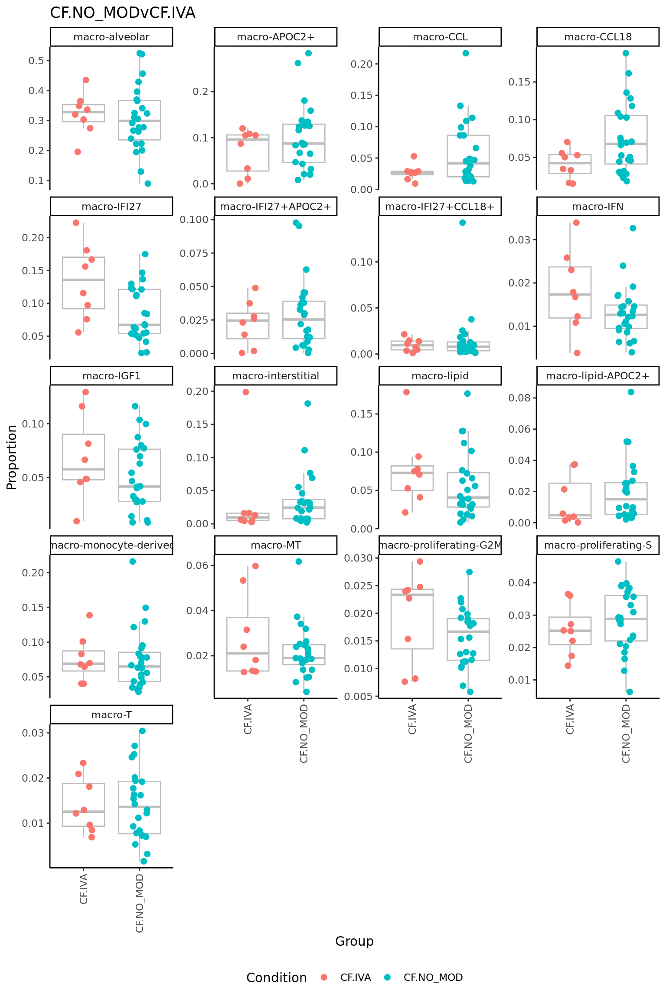
| logFC | AveExpr | t | P.Value | adj.P.Val | B | |
|---|---|---|---|---|---|---|
| macro-CCL18 | -0.1066688 | 0.2540647 | -2.4765341 | 0.0189042 | 0.3213710 | -3.240610 |
| macro-IGF1 | 0.0617442 | 0.2016823 | 1.7523037 | 0.0895689 | 0.7613355 | -4.502771 |
| macro-lipid | 0.0669550 | 0.2289080 | 1.3174221 | 0.1973129 | 0.9545225 | -5.091744 |
| macro-lipid-APOC2+ | 0.0330901 | 0.1152469 | 0.9223003 | 0.3634662 | 0.9545225 | -5.496578 |
| macro-IFI27+CCL18+ | -0.0183941 | 0.1008002 | -0.5090482 | 0.6143083 | 0.9545225 | -5.773949 |
| macro-IFI27+APOC2+ | 0.0178241 | 0.1468071 | 0.4803683 | 0.6343245 | 0.9545225 | -5.787396 |
| macro-T | 0.0062990 | 0.1182567 | 0.4802746 | 0.6343558 | 0.9545225 | -5.787470 |
| macro-proliferating-S | -0.0094593 | 0.1610808 | -0.4801454 | 0.6344466 | 0.9545225 | -5.787529 |
| macro-MT | -0.0099350 | 0.1487592 | -0.4074768 | 0.6864188 | 0.9545225 | -5.818136 |
| macro-proliferating-G2M | -0.0066590 | 0.1237643 | -0.3991574 | 0.6924747 | 0.9545225 | -5.821325 |
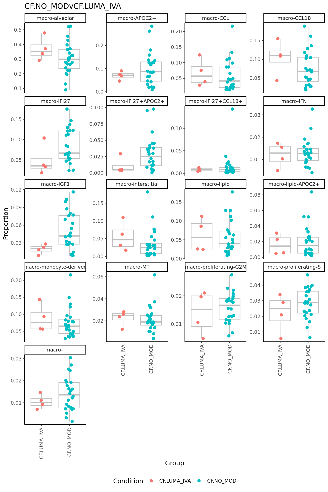
| logFC | AveExpr | t | P.Value | adj.P.Val | B | |
|---|---|---|---|---|---|---|
| macro-IFN | 0.0271627 | 0.1102832 | 2.0027903 | 0.0538831 | 0.6305075 | -4.137732 |
| macro-monocyte-derived | -0.0649346 | 0.2791111 | -1.8476423 | 0.0741774 | 0.6305075 | -4.393307 |
| macro-proliferating-S | 0.0202295 | 0.1610808 | 1.0839516 | 0.2866259 | 0.8535663 | -5.392948 |
| macro-IFI27 | 0.0489569 | 0.3007553 | 1.0740353 | 0.2910628 | 0.8535663 | -5.402790 |
| macro-MT | -0.0218460 | 0.1487592 | -0.9458464 | 0.3514392 | 0.8535663 | -5.523309 |
| macro-interstitial | -0.0389267 | 0.1522175 | -0.7677221 | 0.4484374 | 0.8535663 | -5.666573 |
| macro-CCL18 | -0.0244336 | 0.2540647 | -0.5988361 | 0.5536158 | 0.8535663 | -5.775934 |
| macro-IFI27+CCL18+ | -0.0202417 | 0.1008002 | -0.5913447 | 0.5585600 | 0.8535663 | -5.780176 |
| macro-alveolar | 0.0355601 | 0.5919576 | 0.5873055 | 0.5612351 | 0.8535663 | -5.782441 |
| macro-T | 0.0067967 | 0.1182567 | 0.5470588 | 0.5881992 | 0.8535663 | -5.804225 |
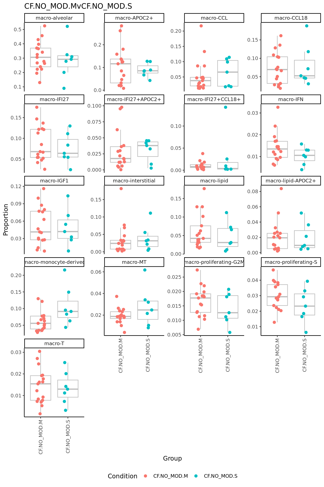
| logFC | AveExpr | t | P.Value | adj.P.Val | B | |
|---|---|---|---|---|---|---|
| macro-IGF1 | 0.1238936 | 0.2016823 | 3.5143548 | 0.0013738 | 0.0233541 | -1.078640 |
| macro-IFN | 0.0236105 | 0.1102832 | 1.6483086 | 0.1092447 | 0.8171448 | -4.896312 |
| macro-lipid | 0.0753321 | 0.2289080 | 1.4815109 | 0.1485239 | 0.8171448 | -5.134942 |
| macro-CCL | -0.0839676 | 0.2263490 | -1.3328079 | 0.1922694 | 0.8171448 | -5.328955 |
| macro-IFI27 | -0.0397423 | 0.3007553 | -0.8255214 | 0.4153581 | 0.8506807 | -5.848981 |
| macro-interstitial | 0.0427504 | 0.1522175 | 0.7983011 | 0.4307447 | 0.8506807 | -5.870365 |
| macro-T | -0.0104680 | 0.1182567 | -0.7977494 | 0.4309980 | 0.8506807 | -5.870858 |
| macro-IFI27+APOC2+ | -0.0242895 | 0.1468071 | -0.6542859 | 0.5177331 | 0.8506807 | -5.971994 |
| macro-monocyte-derived | -0.0228342 | 0.2791111 | -0.6151733 | 0.5429121 | 0.8506807 | -5.996219 |
| macro-alveolar | 0.0359628 | 0.5919576 | 0.5623725 | 0.5778902 | 0.8506807 | -6.026609 |
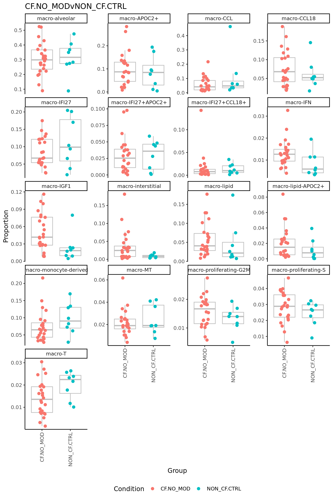
| logFC | AveExpr | t | P.Value | adj.P.Val | B | |
|---|---|---|---|---|---|---|
| macro-CCL | -0.1637086 | 0.2263490 | -2.2031311 | 0.0351144 | 0.5969454 | -3.666995 |
| macro-IGF1 | 0.0733297 | 0.2016823 | 1.7635562 | 0.0876219 | 0.7447863 | -4.376015 |
| macro-interstitial | 0.0978174 | 0.1522175 | 1.5486572 | 0.1315729 | 0.7455796 | -4.677054 |
| macro-lipid | 0.0816477 | 0.2289080 | 1.3613888 | 0.1831651 | 0.7784517 | -4.912357 |
| macro-IFN | 0.0185495 | 0.1102832 | 1.0979399 | 0.2805653 | 0.8220100 | -5.197827 |
| macro-T | -0.0166528 | 0.1182567 | -1.0759794 | 0.2901212 | 0.8220100 | -5.219109 |
| macro-MT | 0.0255988 | 0.1487592 | 0.8897154 | 0.3803755 | 0.8265480 | -5.383474 |
| macro-monocyte-derived | -0.0382513 | 0.2791111 | -0.8737168 | 0.3889638 | 0.8265480 | -5.396162 |
| macro-IFI27 | 0.0375179 | 0.3007553 | 0.6607333 | 0.5136442 | 0.8408146 | -5.544782 |
| macro-lipid-APOC2+ | 0.0268312 | 0.1152469 | 0.6337387 | 0.5308811 | 0.8408146 | -5.560773 |
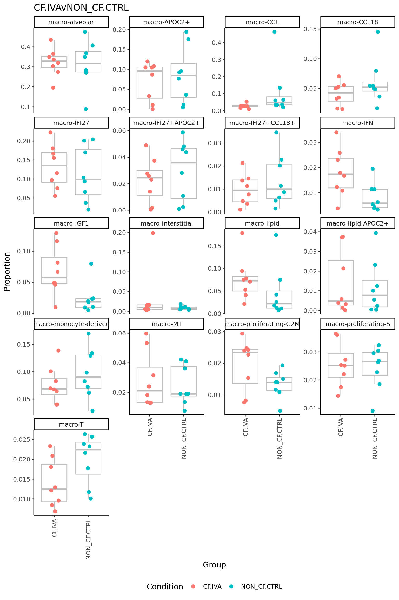
| logFC | AveExpr | t | P.Value | adj.P.Val | B | |
|---|---|---|---|---|---|---|
| macro-CCL18 | 0.1303531 | 0.2540647 | 2.3049452 | 0.0280006 | 0.4760098 | -3.448066 |
| macro-IGF1 | 0.0621495 | 0.2016823 | 1.3433307 | 0.1888776 | 0.9451149 | -4.858046 |
| macro-IFN | 0.0237028 | 0.1102832 | 1.2609030 | 0.2166172 | 0.9451149 | -4.949804 |
| macro-CCL | -0.1029454 | 0.2263490 | -1.2451209 | 0.2223800 | 0.9451149 | -4.966753 |
| macro-T | -0.0167670 | 0.1182567 | -0.9736580 | 0.3376557 | 0.9572141 | -5.228228 |
| macro-IFI27+APOC2+ | -0.0421136 | 0.1468071 | -0.8644118 | 0.3939746 | 0.9572141 | -5.316545 |
| macro-interstitial | 0.0534938 | 0.1522175 | 0.7611648 | 0.4522870 | 0.9572141 | -5.390896 |
| macro-IFI27 | -0.0450603 | 0.3007553 | -0.7132112 | 0.4810285 | 0.9572141 | -5.422349 |
| macro-alveolar | 0.0528250 | 0.5919576 | 0.6294479 | 0.5336491 | 0.9572141 | -5.472545 |
| macro-proliferating-S | 0.0098729 | 0.1610808 | 0.3816720 | 0.7052712 | 0.9572141 | -5.585109 |
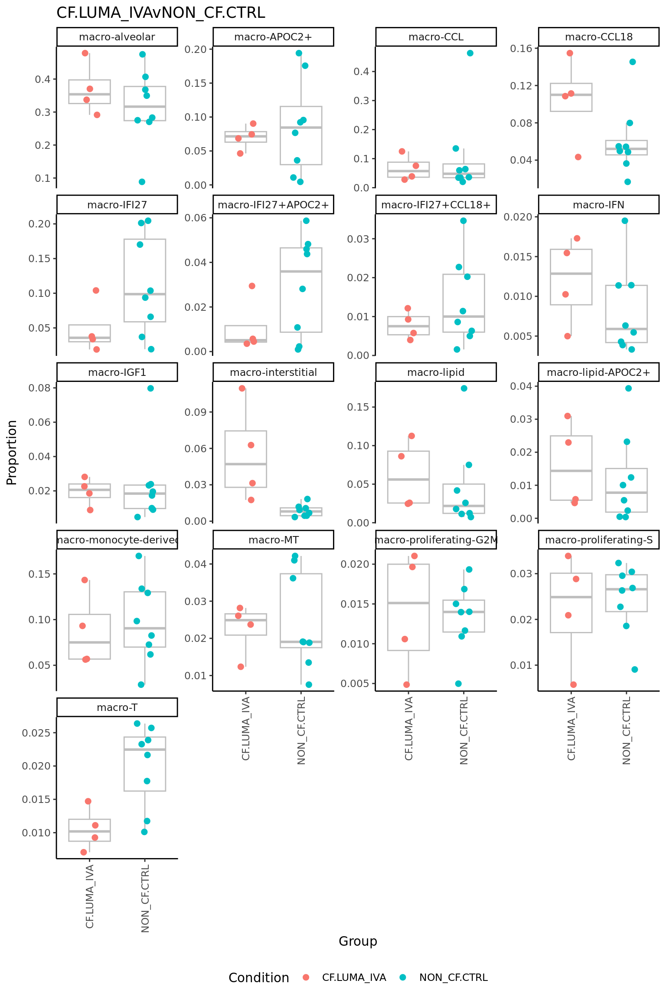
sessioninfo::session_info()─ Session info ───────────────────────────────────────────────────────────────
setting value
version R version 4.3.3 (2024-02-29)
os Ubuntu 22.04.4 LTS
system x86_64, linux-gnu
ui X11
language (EN)
collate en_AU.UTF-8
ctype en_AU.UTF-8
tz Etc/UTC
date 2024-09-10
pandoc 3.1.1 @ /usr/lib/rstudio-server/bin/quarto/bin/tools/ (via rmarkdown)
─ Packages ───────────────────────────────────────────────────────────────────
! package * version date (UTC) lib source
P abind 1.4-5 2016-07-21 [?] RSPM (R 4.3.0)
P AnnotationDbi * 1.64.1 2023-11-03 [?] Bioconductor
P backports 1.4.1 2021-12-13 [?] RSPM (R 4.3.0)
P base64enc 0.1-3 2015-07-28 [?] RSPM (R 4.3.0)
P Biobase * 2.62.0 2023-10-24 [?] Bioconductor
P BiocGenerics * 0.48.1 2023-11-01 [?] Bioconductor
P BiocManager 1.30.22 2023-08-08 [?] RSPM (R 4.3.0)
P Biostrings 2.70.2 2024-01-28 [?] Bioconductor 3.18 (R 4.3.3)
P bit 4.0.5 2022-11-15 [?] RSPM (R 4.3.0)
P bit64 4.0.5 2020-08-30 [?] RSPM (R 4.3.0)
P bitops 1.0-7 2021-04-24 [?] RSPM (R 4.3.0)
P blob 1.2.4 2023-03-17 [?] RSPM (R 4.3.0)
P bslib 0.6.1 2023-11-28 [?] RSPM (R 4.3.0)
P cachem 1.0.8 2023-05-01 [?] RSPM (R 4.3.0)
P callr 3.7.3 2022-11-02 [?] RSPM (R 4.3.0)
P checkmate 2.3.1 2023-12-04 [?] RSPM (R 4.3.0)
P circlize 0.4.15 2022-05-10 [?] RSPM (R 4.3.0)
P cli 3.6.2 2023-12-11 [?] RSPM (R 4.3.0)
P clue 0.3-65 2023-09-23 [?] RSPM (R 4.3.0)
P cluster 2.1.6 2023-12-01 [?] CRAN (R 4.3.2)
P clustree * 0.5.1 2023-11-05 [?] RSPM (R 4.3.0)
P codetools 0.2-19 2023-02-01 [?] CRAN (R 4.2.2)
P colorspace 2.1-0 2023-01-23 [?] RSPM (R 4.3.0)
P ComplexHeatmap 2.18.0 2023-10-24 [?] Bioconductor
P cowplot 1.1.3 2024-01-22 [?] RSPM (R 4.3.0)
P crayon 1.5.2 2022-09-29 [?] RSPM (R 4.3.0)
P data.table 1.15.0 2024-01-30 [?] RSPM (R 4.3.0)
P DBI 1.2.1 2024-01-12 [?] RSPM (R 4.3.0)
P DelayedArray 0.28.0 2023-10-24 [?] Bioconductor
P deldir 2.0-2 2023-11-23 [?] RSPM (R 4.3.0)
P dendextend 1.17.1 2023-03-25 [?] RSPM (R 4.3.0)
P digest 0.6.34 2024-01-11 [?] RSPM (R 4.3.0)
P dittoSeq * 1.14.2 2024-02-09 [?] Bioconductor 3.18 (R 4.3.3)
P doParallel 1.0.17 2022-02-07 [?] RSPM (R 4.3.0)
P dplyr * 1.1.4 2023-11-17 [?] RSPM (R 4.3.0)
P dynamicTreeCut 1.63-1 2016-03-11 [?] RSPM (R 4.3.0)
P edgeR * 4.0.15 2024-02-11 [?] Bioconductor 3.18 (R 4.3.3)
P ellipsis 0.3.2 2021-04-29 [?] RSPM (R 4.3.0)
P evaluate 0.23 2023-11-01 [?] RSPM (R 4.3.0)
P fansi 1.0.6 2023-12-08 [?] RSPM (R 4.3.0)
P farver 2.1.1 2022-07-06 [?] RSPM (R 4.3.0)
P fastcluster 1.2.6 2024-01-12 [?] RSPM (R 4.3.0)
P fastmap 1.1.1 2023-02-24 [?] RSPM (R 4.3.0)
P fitdistrplus 1.1-11 2023-04-25 [?] RSPM (R 4.3.0)
P forcats * 1.0.0 2023-01-29 [?] RSPM (R 4.3.0)
P foreach 1.5.2 2022-02-02 [?] RSPM (R 4.3.0)
P foreign 0.8-86 2023-11-28 [?] CRAN (R 4.3.2)
P Formula 1.2-5 2023-02-24 [?] RSPM (R 4.3.0)
P fs 1.6.3 2023-07-20 [?] RSPM (R 4.3.0)
P future 1.33.1 2023-12-22 [?] RSPM (R 4.3.0)
P future.apply 1.11.1 2023-12-21 [?] RSPM (R 4.3.0)
P generics 0.1.3 2022-07-05 [?] RSPM (R 4.3.0)
P GenomeInfoDb * 1.38.6 2024-02-08 [?] Bioconductor 3.18 (R 4.3.3)
P GenomeInfoDbData 1.2.11 2024-04-23 [?] Bioconductor
P GenomicRanges * 1.54.1 2023-10-29 [?] Bioconductor
P GetoptLong 1.0.5 2020-12-15 [?] RSPM (R 4.3.0)
P getPass 0.2-4 2023-12-10 [?] RSPM (R 4.3.0)
P ggforce 0.4.2 2024-02-19 [?] RSPM (R 4.3.0)
P ggplot2 * 3.5.0 2024-02-23 [?] RSPM (R 4.3.0)
P ggraph * 2.2.0 2024-02-27 [?] RSPM (R 4.3.0)
P ggrepel 0.9.5 2024-01-10 [?] RSPM (R 4.3.0)
P ggridges 0.5.6 2024-01-23 [?] RSPM (R 4.3.0)
P git2r 0.33.0 2023-11-26 [?] RSPM (R 4.3.0)
P glmGamPoi * 1.14.3 2024-02-11 [?] Bioconductor 3.18 (R 4.3.3)
P GlobalOptions 0.1.2 2020-06-10 [?] RSPM (R 4.3.0)
P globals 0.16.2 2022-11-21 [?] RSPM (R 4.3.0)
P glue * 1.7.0 2024-01-09 [?] RSPM (R 4.3.0)
P GO.db 3.18.0 2024-04-23 [?] Bioconductor
P goftest 1.2-3 2021-10-07 [?] RSPM (R 4.3.0)
P graphlayouts 1.1.0 2024-01-19 [?] RSPM (R 4.3.0)
P gridExtra 2.3 2017-09-09 [?] RSPM (R 4.3.0)
P gtable 0.3.4 2023-08-21 [?] RSPM (R 4.3.0)
P here * 1.0.1 2020-12-13 [?] RSPM (R 4.3.0)
P highr 0.10 2022-12-22 [?] RSPM (R 4.3.0)
P Hmisc 5.1-1 2023-09-12 [?] RSPM (R 4.3.0)
P hms 1.1.3 2023-03-21 [?] RSPM (R 4.3.0)
P htmlTable 2.4.2 2023-10-29 [?] RSPM (R 4.3.0)
P htmltools 0.5.7 2023-11-03 [?] RSPM (R 4.3.0)
P htmlwidgets 1.6.4 2023-12-06 [?] RSPM (R 4.3.0)
P httpuv 1.6.14 2024-01-26 [?] RSPM (R 4.3.0)
P httr 1.4.7 2023-08-15 [?] RSPM (R 4.3.0)
P ica 1.0-3 2022-07-08 [?] RSPM (R 4.3.0)
P igraph 2.0.1.1 2024-01-30 [?] RSPM (R 4.3.0)
P impute 1.76.0 2023-10-24 [?] Bioconductor
P IRanges * 2.36.0 2023-10-24 [?] Bioconductor
P irlba 2.3.5.1 2022-10-03 [?] RSPM (R 4.3.0)
P iterators 1.0.14 2022-02-05 [?] RSPM (R 4.3.0)
P jquerylib 0.1.4 2021-04-26 [?] RSPM (R 4.3.0)
P jsonlite 1.8.8 2023-12-04 [?] RSPM (R 4.3.0)
P KEGGREST 1.42.0 2023-10-24 [?] Bioconductor
P KernSmooth 2.23-24 2024-05-17 [?] RSPM (R 4.3.0)
P knitr 1.45 2023-10-30 [?] RSPM (R 4.3.0)
P labeling 0.4.3 2023-08-29 [?] RSPM (R 4.3.0)
P later 1.3.2 2023-12-06 [?] RSPM (R 4.3.0)
P lattice 0.22-5 2023-10-24 [?] CRAN (R 4.3.1)
P lazyeval 0.2.2 2019-03-15 [?] RSPM (R 4.3.0)
P leiden 0.4.3.1 2023-11-17 [?] RSPM (R 4.3.0)
P lifecycle 1.0.4 2023-11-07 [?] RSPM (R 4.3.0)
P limma * 3.58.1 2023-10-31 [?] Bioconductor
P listenv 0.9.1 2024-01-29 [?] RSPM (R 4.3.0)
P lmtest 0.9-40 2022-03-21 [?] RSPM (R 4.3.0)
P locfit 1.5-9.8 2023-06-11 [?] RSPM (R 4.3.0)
P lubridate * 1.9.3 2023-09-27 [?] RSPM (R 4.3.0)
P magrittr 2.0.3 2022-03-30 [?] RSPM (R 4.3.0)
P MASS 7.3-60.0.1 2024-01-13 [?] RSPM (R 4.3.0)
P Matrix 1.6-5 2024-01-11 [?] CRAN (R 4.3.3)
P MatrixGenerics * 1.14.0 2023-10-24 [?] Bioconductor
P matrixStats * 1.2.0 2023-12-11 [?] RSPM (R 4.3.0)
P memoise 2.0.1 2021-11-26 [?] RSPM (R 4.3.0)
P mime 0.12 2021-09-28 [?] RSPM (R 4.3.0)
P miniUI 0.1.1.1 2018-05-18 [?] RSPM (R 4.3.0)
P munsell 0.5.0 2018-06-12 [?] RSPM (R 4.3.0)
P nlme 3.1-164 2023-11-27 [?] RSPM (R 4.3.0)
P nnet 7.3-19 2023-05-03 [?] CRAN (R 4.3.1)
P org.Hs.eg.db * 3.18.0 2024-04-23 [?] Bioconductor
P paletteer * 1.6.0 2024-01-21 [?] RSPM (R 4.3.0)
P parallelly 1.37.0 2024-02-14 [?] RSPM (R 4.3.0)
P patchwork * 1.2.0 2024-01-08 [?] RSPM (R 4.3.0)
P pbapply 1.7-2 2023-06-27 [?] RSPM (R 4.3.0)
P pheatmap 1.0.12 2019-01-04 [?] RSPM (R 4.3.0)
P pillar 1.9.0 2023-03-22 [?] RSPM (R 4.3.0)
P pkgconfig 2.0.3 2019-09-22 [?] RSPM (R 4.3.0)
P plotly 4.10.4 2024-01-13 [?] RSPM (R 4.3.0)
P plyr 1.8.9 2023-10-02 [?] RSPM (R 4.3.0)
P png 0.1-8 2022-11-29 [?] RSPM (R 4.3.0)
P polyclip 1.10-6 2023-09-27 [?] RSPM (R 4.3.0)
P preprocessCore 1.64.0 2023-10-24 [?] Bioconductor
P prismatic 1.1.1 2022-08-15 [?] RSPM (R 4.3.0)
P processx 3.8.3 2023-12-10 [?] RSPM (R 4.3.0)
P progressr 0.14.0 2023-08-10 [?] RSPM (R 4.3.0)
P promises 1.2.1 2023-08-10 [?] RSPM (R 4.3.0)
P ps 1.7.6 2024-01-18 [?] RSPM (R 4.3.0)
P purrr * 1.0.2 2023-08-10 [?] RSPM (R 4.3.0)
P R6 2.5.1 2021-08-19 [?] RSPM (R 4.3.0)
P RANN 2.6.1 2019-01-08 [?] RSPM (R 4.3.0)
P RColorBrewer 1.1-3 2022-04-03 [?] RSPM (R 4.3.0)
P Rcpp 1.0.12 2024-01-09 [?] RSPM (R 4.3.0)
P RcppAnnoy 0.0.22 2024-01-23 [?] RSPM (R 4.3.0)
P RCurl 1.98-1.14 2024-01-09 [?] RSPM (R 4.3.0)
P readr * 2.1.5 2024-01-10 [?] RSPM (R 4.3.0)
P rematch2 2.1.2 2020-05-01 [?] RSPM (R 4.3.0)
renv 1.0.3 2023-09-19 [1] CRAN (R 4.3.3)
P reshape2 1.4.4 2020-04-09 [?] RSPM (R 4.3.0)
P reticulate 1.35.0 2024-01-31 [?] RSPM (R 4.3.0)
P rjson 0.2.21 2022-01-09 [?] RSPM (R 4.3.0)
P rlang 1.1.3 2024-01-10 [?] RSPM (R 4.3.0)
P rmarkdown 2.25 2023-09-18 [?] RSPM (R 4.3.0)
P ROCR 1.0-11 2020-05-02 [?] RSPM (R 4.3.0)
P rpart 4.1.23 2023-12-05 [?] RSPM (R 4.3.0)
P rprojroot 2.0.4 2023-11-05 [?] RSPM (R 4.3.0)
P RSQLite 2.3.5 2024-01-21 [?] RSPM (R 4.3.0)
P rstudioapi 0.15.0 2023-07-07 [?] RSPM (R 4.3.0)
P Rtsne 0.17 2023-12-07 [?] RSPM (R 4.3.0)
P S4Arrays 1.2.0 2023-10-24 [?] Bioconductor
P S4Vectors * 0.40.2 2023-11-23 [?] Bioconductor 3.18 (R 4.3.3)
P sass 0.4.8 2023-12-06 [?] RSPM (R 4.3.0)
P scales 1.3.0 2023-11-28 [?] RSPM (R 4.3.0)
P scattermore 1.2 2023-06-12 [?] RSPM (R 4.3.0)
sctransform 0.4.1 2023-10-19 [1] RSPM (R 4.3.0)
P sessioninfo 1.2.2 2021-12-06 [?] RSPM (R 4.3.0)
Seurat * 4.4.0 2024-04-25 [1] https://satijalab.r-universe.dev (R 4.3.3)
SeuratObject * 4.1.4 2024-04-25 [1] https://satijalab.r-universe.dev (R 4.3.3)
P shape 1.4.6 2021-05-19 [?] RSPM (R 4.3.0)
P shiny 1.8.0 2023-11-17 [?] RSPM (R 4.3.0)
P SingleCellExperiment * 1.24.0 2023-10-24 [?] Bioconductor
P sp 2.1-3 2024-01-30 [?] RSPM (R 4.3.0)
P SparseArray 1.2.4 2024-02-11 [?] Bioconductor 3.18 (R 4.3.3)
P spatstat.data 3.0-4 2024-01-15 [?] RSPM (R 4.3.0)
P spatstat.explore 3.2-6 2024-02-01 [?] RSPM (R 4.3.0)
P spatstat.geom 3.2-8 2024-01-26 [?] RSPM (R 4.3.0)
P spatstat.random 3.2-2 2023-11-29 [?] RSPM (R 4.3.0)
P spatstat.sparse 3.0-3 2023-10-24 [?] RSPM (R 4.3.0)
P spatstat.utils 3.0-4 2023-10-24 [?] RSPM (R 4.3.0)
P speckle * 1.2.0 2023-10-24 [?] Bioconductor
P statmod 1.5.0 2023-01-06 [?] RSPM (R 4.3.0)
P stringi 1.8.3 2023-12-11 [?] RSPM (R 4.3.0)
P stringr * 1.5.1 2023-11-14 [?] RSPM (R 4.3.0)
P SummarizedExperiment * 1.32.0 2023-10-24 [?] Bioconductor
P survival 3.7-0 2024-06-05 [?] RSPM (R 4.3.0)
P tensor 1.5 2012-05-05 [?] RSPM (R 4.3.0)
P tibble * 3.2.1 2023-03-20 [?] RSPM (R 4.3.0)
P tidygraph 1.3.1 2024-01-30 [?] RSPM (R 4.3.0)
P tidyHeatmap * 1.8.1 2022-05-20 [?] RSPM (R 4.3.3)
P tidyr * 1.3.1 2024-01-24 [?] RSPM (R 4.3.0)
P tidyselect 1.2.0 2022-10-10 [?] RSPM (R 4.3.0)
P tidyverse * 2.0.0 2023-02-22 [?] RSPM (R 4.3.0)
P timechange 0.3.0 2024-01-18 [?] RSPM (R 4.3.0)
P tweenr 2.0.3 2024-02-26 [?] RSPM (R 4.3.0)
P tzdb 0.4.0 2023-05-12 [?] RSPM (R 4.3.0)
P utf8 1.2.4 2023-10-22 [?] RSPM (R 4.3.0)
P uwot 0.1.16 2023-06-29 [?] RSPM (R 4.3.0)
P vctrs 0.6.5 2023-12-01 [?] RSPM (R 4.3.0)
P viridis 0.6.5 2024-01-29 [?] RSPM (R 4.3.0)
P viridisLite 0.4.2 2023-05-02 [?] RSPM (R 4.3.0)
P WGCNA 1.72-5 2023-12-07 [?] RSPM (R 4.3.3)
P whisker 0.4.1 2022-12-05 [?] RSPM (R 4.3.0)
P withr 3.0.0 2024-01-16 [?] RSPM (R 4.3.0)
P workflowr * 1.7.1 2023-08-23 [?] RSPM (R 4.3.0)
P xfun 0.42 2024-02-08 [?] RSPM (R 4.3.0)
P xtable 1.8-4 2019-04-21 [?] RSPM (R 4.3.0)
P XVector 0.42.0 2023-10-24 [?] Bioconductor
P yaml 2.3.8 2023-12-11 [?] RSPM (R 4.3.0)
P zlibbioc 1.48.0 2023-10-24 [?] Bioconductor
P zoo 1.8-12 2023-04-13 [?] RSPM (R 4.3.0)
[1] /mnt/allandata/jovana_data/paed-inflammation-CITEseq/renv/library/R-4.3/x86_64-pc-linux-gnu
[2] /home/jovana/.cache/R/renv/sandbox/R-4.3/x86_64-pc-linux-gnu/9a444a72
P ── Loaded and on-disk path mismatch.
──────────────────────────────────────────────────────────────────────────────
sessionInfo()R version 4.3.3 (2024-02-29)
Platform: x86_64-pc-linux-gnu (64-bit)
Running under: Ubuntu 22.04.4 LTS
Matrix products: default
BLAS: /usr/lib/x86_64-linux-gnu/openblas-pthread/libblas.so.3
LAPACK: /usr/lib/x86_64-linux-gnu/openblas-pthread/libopenblasp-r0.3.20.so; LAPACK version 3.10.0
locale:
[1] LC_CTYPE=en_AU.UTF-8 LC_NUMERIC=C
[3] LC_TIME=en_AU.UTF-8 LC_COLLATE=en_AU.UTF-8
[5] LC_MONETARY=en_AU.UTF-8 LC_MESSAGES=en_AU.UTF-8
[7] LC_PAPER=en_AU.UTF-8 LC_NAME=C
[9] LC_ADDRESS=C LC_TELEPHONE=C
[11] LC_MEASUREMENT=en_AU.UTF-8 LC_IDENTIFICATION=C
time zone: Etc/UTC
tzcode source: system (glibc)
attached base packages:
[1] stats4 stats graphics grDevices datasets utils methods
[8] base
other attached packages:
[1] here_1.0.1 tidyHeatmap_1.8.1
[3] paletteer_1.6.0 patchwork_1.2.0
[5] speckle_1.2.0 glue_1.7.0
[7] org.Hs.eg.db_3.18.0 AnnotationDbi_1.64.1
[9] clustree_0.5.1 ggraph_2.2.0
[11] dittoSeq_1.14.2 glmGamPoi_1.14.3
[13] SeuratObject_4.1.4 Seurat_4.4.0
[15] lubridate_1.9.3 forcats_1.0.0
[17] stringr_1.5.1 dplyr_1.1.4
[19] purrr_1.0.2 readr_2.1.5
[21] tidyr_1.3.1 tibble_3.2.1
[23] ggplot2_3.5.0 tidyverse_2.0.0
[25] edgeR_4.0.15 limma_3.58.1
[27] SingleCellExperiment_1.24.0 SummarizedExperiment_1.32.0
[29] Biobase_2.62.0 GenomicRanges_1.54.1
[31] GenomeInfoDb_1.38.6 IRanges_2.36.0
[33] S4Vectors_0.40.2 BiocGenerics_0.48.1
[35] MatrixGenerics_1.14.0 matrixStats_1.2.0
[37] workflowr_1.7.1
loaded via a namespace (and not attached):
[1] fs_1.6.3 spatstat.sparse_3.0-3 bitops_1.0-7
[4] httr_1.4.7 RColorBrewer_1.1-3 doParallel_1.0.17
[7] dynamicTreeCut_1.63-1 backports_1.4.1 tools_4.3.3
[10] sctransform_0.4.1 utf8_1.2.4 R6_2.5.1
[13] lazyeval_0.2.2 uwot_0.1.16 GetoptLong_1.0.5
[16] withr_3.0.0 sp_2.1-3 gridExtra_2.3
[19] preprocessCore_1.64.0 progressr_0.14.0 WGCNA_1.72-5
[22] cli_3.6.2 spatstat.explore_3.2-6 labeling_0.4.3
[25] sass_0.4.8 prismatic_1.1.1 spatstat.data_3.0-4
[28] ggridges_0.5.6 pbapply_1.7-2 foreign_0.8-86
[31] sessioninfo_1.2.2 parallelly_1.37.0 impute_1.76.0
[34] rstudioapi_0.15.0 RSQLite_2.3.5 generics_0.1.3
[37] shape_1.4.6 ica_1.0-3 spatstat.random_3.2-2
[40] dendextend_1.17.1 GO.db_3.18.0 Matrix_1.6-5
[43] fansi_1.0.6 abind_1.4-5 lifecycle_1.0.4
[46] whisker_0.4.1 yaml_2.3.8 SparseArray_1.2.4
[49] Rtsne_0.17 grid_4.3.3 blob_1.2.4
[52] promises_1.2.1 crayon_1.5.2 miniUI_0.1.1.1
[55] lattice_0.22-5 cowplot_1.1.3 KEGGREST_1.42.0
[58] pillar_1.9.0 knitr_1.45 ComplexHeatmap_2.18.0
[61] rjson_0.2.21 future.apply_1.11.1 codetools_0.2-19
[64] leiden_0.4.3.1 getPass_0.2-4 data.table_1.15.0
[67] vctrs_0.6.5 png_0.1-8 gtable_0.3.4
[70] rematch2_2.1.2 cachem_1.0.8 xfun_0.42
[73] S4Arrays_1.2.0 mime_0.12 tidygraph_1.3.1
[76] survival_3.7-0 pheatmap_1.0.12 iterators_1.0.14
[79] statmod_1.5.0 ellipsis_0.3.2 fitdistrplus_1.1-11
[82] ROCR_1.0-11 nlme_3.1-164 bit64_4.0.5
[85] RcppAnnoy_0.0.22 rprojroot_2.0.4 bslib_0.6.1
[88] irlba_2.3.5.1 rpart_4.1.23 KernSmooth_2.23-24
[91] Hmisc_5.1-1 colorspace_2.1-0 DBI_1.2.1
[94] nnet_7.3-19 tidyselect_1.2.0 processx_3.8.3
[97] bit_4.0.5 compiler_4.3.3 git2r_0.33.0
[100] htmlTable_2.4.2 DelayedArray_0.28.0 plotly_4.10.4
[103] checkmate_2.3.1 scales_1.3.0 lmtest_0.9-40
[106] callr_3.7.3 digest_0.6.34 goftest_1.2-3
[109] spatstat.utils_3.0-4 rmarkdown_2.25 XVector_0.42.0
[112] base64enc_0.1-3 htmltools_0.5.7 pkgconfig_2.0.3
[115] highr_0.10 fastmap_1.1.1 rlang_1.1.3
[118] GlobalOptions_0.1.2 htmlwidgets_1.6.4 shiny_1.8.0
[121] farver_2.1.1 jquerylib_0.1.4 zoo_1.8-12
[124] jsonlite_1.8.8 RCurl_1.98-1.14 magrittr_2.0.3
[127] Formula_1.2-5 GenomeInfoDbData_1.2.11 munsell_0.5.0
[130] Rcpp_1.0.12 viridis_0.6.5 reticulate_1.35.0
[133] stringi_1.8.3 zlibbioc_1.48.0 MASS_7.3-60.0.1
[136] plyr_1.8.9 parallel_4.3.3 listenv_0.9.1
[139] ggrepel_0.9.5 deldir_2.0-2 Biostrings_2.70.2
[142] graphlayouts_1.1.0 splines_4.3.3 tensor_1.5
[145] hms_1.1.3 circlize_0.4.15 locfit_1.5-9.8
[148] ps_1.7.6 fastcluster_1.2.6 igraph_2.0.1.1
[151] spatstat.geom_3.2-8 reshape2_1.4.4 evaluate_0.23
[154] renv_1.0.3 BiocManager_1.30.22 tzdb_0.4.0
[157] foreach_1.5.2 tweenr_2.0.3 httpuv_1.6.14
[160] RANN_2.6.1 polyclip_1.10-6 future_1.33.1
[163] clue_0.3-65 scattermore_1.2 ggforce_0.4.2
[166] xtable_1.8-4 later_1.3.2 viridisLite_0.4.2
[169] memoise_2.0.1 cluster_2.1.6 timechange_0.3.0
[172] globals_0.16.2